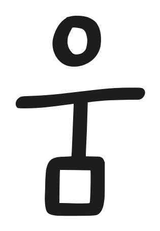

<!doctype html>
<html lang="en">
<head>
<meta charset="utf-8">
<meta name="viewport" content="width=device-width, initial-scale=1, viewport-fit=cover">
<title>Digital Media & Flourishing</title>
<meta name="claude:viewport-fit-sides" content="cover">
<meta name="robots" content="noindex, nofollow">
<link rel="icon" href="assets/daum-mark.svg" type="image/svg+xml">
<link rel="preconnect" href="https://fonts.googleapis.com">
<link rel="stylesheet" href="https://fonts.googleapis.com/css2?family=Figtree:wght@400;500;700;800&display=swap">
<style>
/* DAUM system (v2, Oct 2026): paper and ink, Figtree in three weights, colour as a stroke.
   Single theme — paper is the only ground. The students' own brand colours appear only
   inside their tiles and pages. Numerals in vermilion, links with a painted cobalt
   underline, one butter highlighter on the title, hairlines never shadows, square corners. */
:root{
  color-scheme:light;
  --paper:#f3f1ec; --ink:#1e1d1b; --ink-soft:#4a4843; --ink-mute:#6b675e; --rule:#d8d4cc;
  --vermilion:#e8503a; --cobalt:#2f4be0; --butter:#f2ce3a;
  --accent:var(--ink);
  --sans:"Figtree",system-ui,-apple-system,"Helvetica Neue",Arial,sans-serif;
  --gutter-l:max(24px,env(safe-area-inset-left,0px)); --gutter-r:max(24px,env(safe-area-inset-right,0px));
  --s1:4px; --s2:8px; --s3:16px; --s4:24px; --s5:40px; --s6:56px; --s7:96px;
}
@media (min-width:760px){:root{--gutter-l:max(56px,env(safe-area-inset-left,0px)); --gutter-r:max(56px,env(safe-area-inset-right,0px))}}

*{box-sizing:border-box}
html{scroll-behavior:smooth}
@media (prefers-reduced-motion:reduce){html{scroll-behavior:auto} *{transition:none!important;animation:none!important}}
body{margin:0;background:var(--paper);color:var(--ink);font-family:var(--sans);font-size:17px;line-height:1.55;-webkit-font-smoothing:antialiased;min-height:100%}
body::before{content:"";position:fixed;inset:0 0 auto;height:env(safe-area-inset-top,0px);z-index:10;background:var(--paper)}
img{max-width:100%;display:block;height:auto}
a{color:inherit}
button{font:inherit;color:inherit;background:none;border:0;padding:0;cursor:pointer}
:focus-visible{outline:2px solid var(--cobalt);outline-offset:3px}
[hidden]{display:none!important}
h1,h2,h3{font-weight:800;letter-spacing:-.03em;text-wrap:balance;margin:0;line-height:1.05}

.wrap{padding-left:var(--gutter-l);padding-right:var(--gutter-r);max-width:1320px;margin-inline:auto}
.label{font-size:12px;font-weight:700;letter-spacing:.14em;text-transform:uppercase;color:var(--ink-mute);line-height:1.3}
.small{font-size:14px;font-weight:500;line-height:1.45;color:var(--ink-soft)}
.num{color:var(--vermilion);font-variant-numeric:tabular-nums}
mark{background:linear-gradient(transparent 58%,var(--butter) 58%,var(--butter) 94%,transparent 94%);color:inherit}

/* painted links: bold ink, cobalt on hover, a drawn underline */
.plink{display:inline-flex;flex-direction:column;gap:var(--s1);font-weight:700;font-size:17px;line-height:1.2;text-decoration:none;color:var(--ink)}
.plink:hover,.plink:focus-visible{color:var(--cobalt)}
.plink svg{display:block;height:8px;width:auto}
.plink.sm{font-size:15px}
.plink.sm svg{height:7px}
.quiet{text-decoration:none;color:var(--ink-soft);font-weight:700}
.quiet:hover{color:var(--cobalt)}

/* ---------- header ---------- */
.bar{position:sticky;top:env(safe-area-inset-top,0px);z-index:5;background:var(--paper);border-bottom:1px solid var(--rule)}
.bar .wrap{display:flex;align-items:center;justify-content:space-between;gap:16px;min-height:64px}
.bar .home{font-weight:700;font-size:16px;letter-spacing:-.01em;text-decoration:none;white-space:nowrap}
.bar nav{display:flex;gap:28px;font-size:15px;font-weight:700}
.bar nav a{text-decoration:none;position:relative;padding-bottom:6px}
.bar nav a:hover{color:var(--cobalt)}
.bar nav a svg{position:absolute;left:0;right:0;bottom:-2px;height:6px;width:100%;display:none}
.bar nav a[aria-current="page"] svg{display:block}
@media (max-width:520px){.bar .home{font-size:14px} .bar nav{gap:16px;font-size:14px}}

/* ---------- home / syllabus ---------- */
.hero{padding-block:clamp(48px,8vw,112px) clamp(32px,5vw,64px);display:grid;gap:var(--s4);border-bottom:1px solid var(--rule)}
.hero h1{font-size:clamp(44px,8vw,96px);line-height:.95;letter-spacing:-.045em;max-width:11ch}
.hero .ja{font-size:clamp(16px,2vw,22px);font-weight:500;color:var(--ink-soft);letter-spacing:.06em}
.hero .offered{display:flex;flex-wrap:wrap;align-items:center;gap:var(--s3) var(--s5);margin-top:var(--s3)}
.hero .offered img{height:40px;width:auto}
.hero .offered img.dabtong{height:34px}
@media (max-width:520px){.hero .offered img{height:32px} .hero .offered img.dabtong{height:28px}}
.block{padding-block:clamp(48px,7vw,96px);border-bottom:1px solid var(--rule);display:grid;grid-template-columns:minmax(0,200px) minmax(0,1fr);gap:var(--s4) var(--s5)}
.block > .label{padding-top:8px}
.block h2{font-size:32px;margin-bottom:var(--s4)}
@media (max-width:760px){.block{grid-template-columns:1fr;padding-block:var(--s6)}}
.lede{font-size:clamp(20px,2.3vw,26px);font-weight:500;line-height:1.4;max-width:32ch;margin:0}
.outcomes{list-style:none;margin:0;padding:0;display:grid;gap:var(--s3);max-width:68ch}
.outcomes li{padding-left:36px;position:relative}
.outcomes li svg{position:absolute;left:0;top:.55em;width:22px;height:8px}

.sched{width:100%;border-collapse:collapse;font-variant-numeric:tabular-nums}
.sched th{text-align:left;padding:0 12px 12px 0;border-bottom:1px solid var(--ink)}
.sched td{padding:16px 12px 16px 0;border-bottom:1px solid var(--rule);vertical-align:top}
.sched td.wk{width:4ch;font-weight:800;font-size:20px;line-height:1.2;letter-spacing:-.02em}
.sched td.date{white-space:nowrap;width:12ch;font-weight:500}
.sched td.time{white-space:nowrap;width:12ch;color:var(--ink-soft)}
.sched td.topic{font-weight:700}
.sched .note{display:block;font-weight:500;color:var(--ink-soft);font-size:14px;margin-top:2px}
.sched .work{margin-top:8px}
.sched tr.next td{background:#ebe8e1}
.sched tr.past td{color:var(--ink-mute)}
.sched tr.past td.wk{color:var(--ink-mute)}
.sched tr.past td.topic{font-weight:500}
.chip{display:inline-block;font-size:12px;font-weight:700;letter-spacing:.14em;text-transform:uppercase;color:var(--cobalt);margin-left:10px;vertical-align:middle}
@media (max-width:600px){.sched td.time,.sched th.time{display:none}}
.sched-notes{color:var(--ink-soft);font-size:14px;font-weight:500;max-width:68ch;margin-top:var(--s4);display:grid;gap:8px}

/* ---------- brand grid ---------- */
.grid{display:grid;grid-template-columns:repeat(auto-fill,minmax(min(100%,380px),1fr));gap:var(--s5) var(--s4);padding-block:var(--s5) var(--s7)}
.grid.strip{grid-template-columns:repeat(auto-fill,minmax(min(100%,250px),1fr));padding-block:0;gap:var(--s4) 20px}
.tile{display:grid;gap:12px;text-decoration:none;min-width:0}
.tile .cover{background:var(--tile,var(--accent));overflow:hidden;position:relative;aspect-ratio:4/3;display:grid;place-items:center}
.tile .cover img.logo{width:44%;height:auto;max-height:60%;object-fit:contain;transition:transform .6s cubic-bezier(.2,.7,.2,1)}
.tile .cover img.logo.wide{width:64%}
.tile .cover img.full{width:100%;height:100%;object-fit:cover;transition:transform .6s cubic-bezier(.2,.7,.2,1)}
.tile:hover .cover img.logo{transform:scale(1.06)}
.tile:hover .cover img.full{transform:scale(1.03)}
.tile .cap{font-size:14px;font-weight:500;color:var(--ink-soft);min-width:0;overflow:hidden;text-overflow:ellipsis;white-space:nowrap}
.tile:hover .cap{color:var(--cobalt)}
.section-head{padding-block:clamp(48px,8vw,96px) 0;display:grid;gap:var(--s4)}
.section-head h1{font-size:clamp(40px,6.5vw,72px);line-height:.98;letter-spacing:-.04em}
.section-head p{margin:0;max-width:60ch;font-size:20px;font-weight:500;line-height:1.4;color:var(--ink-soft)}
.work-section{padding-top:clamp(40px,6vw,72px);display:grid;gap:var(--s3)}
.work-section h2{font-size:32px}
.more{display:flex;justify-content:space-between;align-items:baseline;gap:16px;flex-wrap:wrap;margin-bottom:var(--s4)}
.empty{padding-block:64px;color:var(--ink-soft);max-width:52ch}

/* ---------- brand page ---------- */
.head{padding-block:clamp(32px,5vw,64px) 0;display:grid;gap:var(--s5)}
.head .cover{border:1px solid var(--rule)}
.head .cover img{width:100%}
.title{display:grid;grid-template-columns:minmax(0,1fr) minmax(0,1fr);gap:var(--s4) var(--s5);align-items:start;padding-bottom:clamp(32px,5vw,64px);border-bottom:1px solid var(--rule)}
.title h1{font-size:clamp(36px,5.5vw,64px);line-height:1;letter-spacing:-.04em}
.title .by{display:grid;gap:2px;margin-top:var(--s3)}
.title .by .name{font-size:17px;font-weight:700}
.title .by .role{color:var(--ink-soft);font-size:15px;font-weight:500}
.title .side{display:grid;gap:var(--s3);align-content:start}
.title .tag{font-size:clamp(20px,2.3vw,26px);font-weight:500;line-height:1.35;margin:0}
.words{font-size:15px;font-weight:700;color:var(--accent);display:flex;flex-wrap:wrap;gap:0}
.words span+span::before{content:"·";margin-inline:8px;color:var(--ink-mute)}
@media (max-width:760px){.title{grid-template-columns:1fr}}

section.part{padding-block:clamp(40px,6vw,80px);border-bottom:1px solid var(--rule)}
.part-head{display:flex;align-items:baseline;justify-content:space-between;gap:16px;flex-wrap:wrap;margin-bottom:var(--s4)}
.part-head h2{font-size:32px}
.part-head .note{max-width:48ch}

/* moodboard: references with the student's own notes, masonry columns */
.mood{columns:4 220px;column-gap:var(--s4)}
.mood figure{margin:0 0 var(--s4);break-inside:avoid;display:grid;gap:8px}
.mood a{display:block;border:1px solid var(--rule);background:#fff}
.mood a:hover{border-color:var(--ink)}
.mood img{width:100%}
.mood figcaption{font-size:14px;font-weight:500;line-height:1.45;color:var(--ink-soft)}
.kit-pages{display:grid;grid-template-columns:repeat(auto-fill,minmax(min(100%,420px),1fr));gap:var(--s4)}
.kit-pages img{width:100%;border:1px solid var(--rule)}

.pages{display:grid;gap:var(--s4);max-width:1040px}
.page{display:grid;gap:8px}
.page button{display:block;width:100%;border:1px solid var(--rule);background:#fff;transition:border-color .2s}
.page button:hover{border-color:var(--ink)}
.page img{width:100%}
.page .folio{display:flex;justify-content:space-between}

.desk{border:1px solid var(--rule);padding:clamp(24px,5vw,56px);display:grid;grid-template-columns:repeat(auto-fit,minmax(min(100%,300px),1fr));gap:clamp(24px,4vw,48px);align-items:start}
.card{display:grid;gap:10px;justify-items:start}
.card img{width:100%;border:1px solid var(--rule)}

.rail{display:flex;gap:var(--s3);overflow-x:auto;scroll-snap-type:x mandatory;padding-bottom:14px;scrollbar-width:thin;scrollbar-color:var(--rule) transparent;-webkit-overflow-scrolling:touch;overscroll-behavior-x:contain}
.rail .slide{flex:0 0 auto;scroll-snap-align:start;height:min(68vh,600px);border:1px solid var(--rule)}
.rail .slide img{height:100%;width:auto;max-width:none}
@media (max-width:600px){.rail .slide{height:auto;width:86%} .rail .slide img{width:100%;height:auto}}
.rail-ctl{display:flex;align-items:baseline;gap:var(--s4);margin-top:var(--s3)}
.rail-ctl .cnt{font-size:14px;font-weight:500;color:var(--ink-soft);font-variant-numeric:tabular-nums}
.rail-ctl button{font-weight:700;font-size:15px}
.rail-ctl button:hover{color:var(--cobalt)}

.credits{padding-block:clamp(40px,6vw,80px);display:grid;grid-template-columns:minmax(0,1fr) auto;gap:var(--s4);align-items:start}
.credits .who{font-size:32px;font-weight:800;letter-spacing:-.03em;line-height:1.05}
.credits .lines{display:grid;gap:2px;margin-top:var(--s3)}
.credits .links{display:flex;flex-wrap:wrap;gap:8px 24px;margin-top:var(--s4)}
.credits .mark{width:min(120px,28vw);aspect-ratio:1;background:var(--tile,var(--accent));display:grid;place-items:center}
.credits .mark img{width:60%}
@media (max-width:600px){.credits{grid-template-columns:1fr}}
.pn{display:grid;grid-template-columns:1fr 1fr;border-top:1px solid var(--rule);margin-bottom:var(--s7)}
.pn a{display:grid;gap:6px;padding-block:var(--s4);text-decoration:none;min-width:0}
.pn a+a{text-align:right;border-left:1px solid var(--rule);padding-left:16px}
.pn a:first-child{padding-right:16px}
.pn a:only-child{grid-column:1/-1;text-align:left;border-left:0;padding-left:0}
.pn .t{font-weight:800;font-size:24px;letter-spacing:-.03em;line-height:1.15;overflow:hidden;text-overflow:ellipsis;white-space:nowrap}
.pn a:hover .t{color:var(--cobalt)}

.lb{position:fixed;inset:0;z-index:20;background:rgba(243,241,236,.96);display:grid;grid-template-rows:auto 1fr;
  padding-left:var(--gutter-l);padding-right:var(--gutter-r);padding-top:env(safe-area-inset-top,0px);padding-bottom:env(safe-area-inset-bottom,0px)}
.lb .top{display:flex;justify-content:space-between;align-items:center;min-height:64px}
.lb .stage{display:grid;place-items:center;overflow:auto;padding-bottom:24px}
.lb .stage img{max-height:calc(100vh - 120px);width:auto;max-width:100%;border:1px solid var(--rule)}
.lb .nav{display:flex;gap:var(--s4);align-items:baseline}
.lb .nav button{font-weight:700;font-size:15px}
.lb .nav button:hover{color:var(--cobalt)}

/* assignment page */
.assign{padding-block:clamp(40px,7vw,80px) var(--s7);display:grid;gap:var(--s6);max-width:72ch}
.assign .head-a{display:grid;gap:var(--s3)}
.assign h1{font-size:clamp(32px,5vw,56px);line-height:1;letter-spacing:-.04em}
.assign .intro{font-size:20px;font-weight:500;line-height:1.4;color:var(--ink-soft);margin:0}
.assign section{display:grid;gap:var(--s3)}
.assign h2{font-size:24px;letter-spacing:-.03em}
.assign p{margin:0}
.reading{border:1px solid var(--rule);padding:var(--s4);display:grid;gap:var(--s3)}
.reading .cite{font-size:17px;line-height:1.5}
.reading .links{display:flex;flex-wrap:wrap;gap:8px 28px}
.qs{list-style:none;margin:0;padding:0;display:grid;gap:var(--s3);counter-reset:q}
.qs li{display:grid;grid-template-columns:3ch 1fr;gap:var(--s3);align-items:baseline}
.qs li::before{counter-increment:q;content:counter(q,decimal-leading-zero);color:var(--vermilion);font-weight:800;font-size:20px;letter-spacing:-.02em;font-variant-numeric:tabular-nums}
.skip{list-style:none;margin:0;padding:0;display:grid;gap:8px;color:var(--ink-soft)}
.skip li{padding-left:28px;position:relative}
.skip li::before{content:"";position:absolute;left:0;top:.7em;width:14px;height:1px;background:var(--ink-mute)}
.qs b{display:block;font-size:18px;letter-spacing:-.01em;line-height:1.3}
.qs span{color:var(--ink-soft);display:block;margin-top:4px;line-height:1.45}
.pills{display:flex;flex-wrap:wrap;gap:8px}
.pill{border:1px solid var(--rule);padding:6px 12px;border-radius:999px;font-size:15px}
.bcards{display:grid;grid-template-columns:repeat(auto-fit,minmax(220px,1fr));gap:var(--s3)}
.bcard{border:1px solid var(--rule);padding:var(--s4);display:grid;gap:12px;align-content:start}
.bcard .em{font-size:40px;line-height:1}
.bcard h3{margin:0;font-size:20px;letter-spacing:-.02em;line-height:1.2}
.bcard .sit{color:var(--ink-soft);font-size:16px;line-height:1.45}
.bcard dl{margin:0;display:grid;gap:10px}
.bcard dt{font-size:12px;font-weight:800;letter-spacing:.08em;text-transform:uppercase;color:var(--vermilion)}
.bcard dd{margin:2px 0 0;font-size:15px;line-height:1.45}
.bcard .ask{font-size:15px;font-style:italic;color:var(--ink-soft);border-top:1px solid var(--rule);padding-top:10px}
.assign figure{margin:0;display:grid;gap:10px}
.assign figure img{width:100%;height:auto;display:block;border:1px solid var(--rule);background:#fff}
.assign figcaption{font-size:15px;line-height:1.45;color:var(--ink-soft)}
/* long guides: sub-headings, inline code and links, run-on steps, sub-points, checklists, tables */
.assign h3{font-size:19px;letter-spacing:-.02em;margin:var(--s3) 0 0}
.assign code{font-family:ui-monospace,SFMono-Regular,Menlo,monospace;font-size:.88em;background:#fff;border:1px solid var(--rule);padding:1px 5px;border-radius:4px;white-space:nowrap}
.assign p a,.assign li a,.gtable a{color:var(--cobalt);text-underline-offset:3px}
.qs .lead{color:var(--ink);margin-top:0}
.qs .lead b,.qs .sub b,.blist b,.check b{display:inline;font-size:inherit;letter-spacing:inherit;line-height:inherit;color:var(--ink)}
.skip.sub{margin-top:10px;font-size:16px}
.qs .sub li{display:block;padding-left:28px}
.qs .sub li::before{content:"";counter-increment:none;position:absolute;left:0;top:.7em;width:14px;height:1px;background:var(--ink-mute)}
.check{list-style:none;margin:0;padding:0;display:grid;gap:12px}
.check li{padding-left:32px;position:relative;color:var(--ink-soft)}
.check li::before{content:"";position:absolute;left:0;top:.25em;width:16px;height:16px;border:1.5px solid var(--ink);border-radius:3px}
.gtable{border-collapse:collapse;width:100%;font-size:15px;line-height:1.45}
.gtable th{text-align:left;padding:0 12px 10px 0;border-bottom:1px solid var(--ink);font-size:12px;font-weight:700;letter-spacing:.1em;text-transform:uppercase;color:var(--ink-mute)}
.gtable td{padding:12px 12px 12px 0;border-bottom:1px solid var(--rule);vertical-align:top}
.gtable td:first-child{font-weight:700}

/* passcode gate for student work */
.gate{padding-block:clamp(64px,12vw,160px) var(--s7);display:grid;gap:var(--s4);max-width:52ch}
.gate h1{font-size:clamp(32px,5vw,56px);line-height:1;letter-spacing:-.04em}
.gate p{margin:0;font-size:17px;color:var(--ink-soft)}
.gate form{display:flex;flex-wrap:wrap;align-items:flex-end;gap:var(--s4);margin-top:var(--s2)}
.gate .field{display:grid;gap:6px;min-width:0}
.gate input{font:inherit;font-size:20px;font-weight:500;color:var(--ink);background:transparent;border:0;border-bottom:1px solid var(--ink);padding:8px 0;min-width:16ch;border-radius:0;letter-spacing:.1em}
.gate input:focus{outline:0;border-bottom-color:var(--cobalt)}
.gate button{padding-bottom:12px}
.gate .err{color:var(--vermilion);font-weight:500;min-height:1.5em}

footer.site{padding-block:var(--s5) var(--s6);border-top:1px solid var(--rule);display:flex;flex-wrap:wrap;gap:var(--s3) var(--s4);justify-content:space-between;align-items:center;color:var(--ink-soft);font-size:14px;font-weight:500}
footer.site img{height:28px;width:auto}
</style>
</head>
<body>

<div id="app"></div>

<script>
/* ===== Generated by build.py from course.json and the student folders ===== */
window.COURSE = {
  "title": "Digital Media & Flourishing",
  "titleJa": "デジタルメディアと成長特論",
  "term": "Fall 2026",
  "school": "School of Design and Science, Chiba Tech",
  "instructor": "Daum Kim",
  "format": "Online · Wednesdays 13:00–15:00 Tokyo",
  "description": "How is digital media shaping our world, our perceptions, and the way we communicate and think? In this course, we explore the mechanisms driving new cultural and societal trends in digital media. We examine the relationship between technology, its functions, and human experience, along with the nature of the digital world and how it influences our lives.",
  "outcomesIntro": "I wish the class will guide you to:",
  "outcomes": [
    "Develop an understanding of theories of narrative, intergroup contact, digital architecture, and media design.",
    "Explore how concepts such as attention, trust, value, and belonging emerge and operate within digital environments.",
    "Gain hands-on experience creating digital content across formats — writing, visual identity, short-form and long-form video, and AI-assisted design.",
    "Design and critique platform functions, reflecting on how the architecture of digital platforms influences interaction, behaviour, trust, and flourishing.",
    "Consider how digital media shapes encounters across difference, including its potential to both divide and connect people."
  ],
  "schedule": [
    {
      "week": 1,
      "date": "2026-09-30",
      "time": "13:00–15:00",
      "topic": "Introduction to Digital Media"
    },
    {
      "week": 2,
      "date": "2026-10-07",
      "time": "13:00–15:00",
      "topic": "Narrative + Write"
    },
    {
      "week": 3,
      "date": "2026-10-14",
      "time": "13:00–15:00",
      "topic": "Visuals — Brand Identity",
      "work": "brands"
    },
    {
      "week": 4,
      "date": "2026-10-21",
      "time": "13:00–15:00",
      "topic": "Brand Narrative & Engagement"
    },
    {
      "week": 5,
      "date": "2026-10-28",
      "time": "13:00–15:00",
      "topic": "Attention",
      "note": "Guest speaker: Dr. Gal Raz",
      "noteLink": "https://galraz.github.io/"
    },
    {
      "week": 6,
      "date": "2026-11-04",
      "time": "13:00–15:00",
      "topic": "Introduction to Video"
    },
    {
      "week": 7,
      "date": "2026-11-11",
      "time": "13:00–15:00",
      "topic": "Documentary",
      "note": "Guest speaker: Hiro Kay, NHK World producer"
    },
    {
      "week": 8,
      "date": "2026-11-18",
      "time": "13:00–16:00",
      "topic": "Shorts",
      "note": "Three-hour session"
    },
    {
      "week": 9,
      "date": "2026-11-25",
      "time": "13:00–15:00",
      "topic": "Long-Form Video Creation (1)"
    },
    {
      "week": 10,
      "date": "2026-12-02",
      "time": "13:00–15:00",
      "topic": "Long-Form Video Creation (2)"
    },
    {
      "week": 11,
      "date": "2026-12-09",
      "time": "13:00–16:00",
      "topic": "Flourishing",
      "note": "Three-hour session"
    },
    {
      "week": 12,
      "date": "2026-12-16",
      "time": "13:00–15:00",
      "topic": "Final Project Presentations"
    }
  ],
  "scheduleNotes": [
    "Every session meets online on Wednesdays. The November 18 and December 9 classes are three hours long to make up for the class that falls on Silver Week.",
    "This syllabus may change during the semester; any changes will be announced. Revised 19 October 2026."
  ],
  "brandsIntro": "In Week 3 each student designed a personal brand from the ground up: a brand guide, a business card, and a story told as a social carousel.",
  "workIntro": "Work made in the course by the students, shared with the class of 2026",
  "assignments": [
    {
      "id": "week-4",
      "week": 4,
      "title": "Group project: one imaginary brand, one platform",
      "linkText": "Group project brief and the three brands",
      "intro": "In the Week 4 breakout each room became a platform and chose one of three imaginary brands. Finish the strategy with your team and present it in class on Wednesday 4 November.",
      "sections": [
        {
          "heading": "The rooms",
          "text": "Each breakout room is a platform. The platform was assigned; the brand was your choice. Tell us who is in your team and which brand you picked in your platform's thread in the Slack channel #digitalmedia-flourishing-2026.",
          "pills": [
            "Instagram",
            "Threads or X",
            "TikTok",
            "LinkedIn"
          ]
        },
        {
          "heading": "The three brands",
          "text": "The briefs are vague on purpose so that you can be creative. The toilet paper can be fancy or cheap and funny; the fisher can be rude or charming. The audience does not have to be in Bhutan or Japan: choose the audience, research what they like, and build the strategy from that.",
          "brands": [
            {
              "emoji": "🎣",
              "name": "Brand A · Individual · The Fisher",
              "situation": "A young person who left the city to become a fisher in the countryside, with no money, trying to make a living as a content creator.",
              "facts": [
                [
                  "Who",
                  "One person, one small boat, very early starts, fish to catch every day, and knows how to cook."
                ],
                [
                  "Goal",
                  "Become a monetisable influencer and make an income from content."
                ],
                [
                  "Audience",
                  "Up to you. City people who dream of leaving? People who cook? Fishing hobbyists? Pick them and research what they watch."
                ]
              ]
            },
            {
              "emoji": "🗣️",
              "name": "Brand B · Team · AI Translation Tool",
              "situation": "A software company whose tool gives real-time translation between English, Japanese and Dzongkha. You are the marketer, and you need to promote the company.",
              "facts": [
                [
                  "Who",
                  "A small team with a working app that nobody knows yet."
                ],
                [
                  "Goal",
                  "Get the tool known and used."
                ],
                [
                  "Audience",
                  "Up to you. Exchange students and host families? Tour guides and their guests? Hospitals and clinics? Businesses trading between Japan and Bhutan? Families with one grandparent who speaks one language? Or a market you find yourself."
                ]
              ]
            },
            {
              "emoji": "🧻",
              "name": "Brand C · Small brand · Toilet Paper",
              "situation": "A second-generation family mill with a small staff, making unbleached, slightly organic toilet paper. Nobody knows it yet.",
              "facts": [
                [
                  "Who",
                  "A normal toilet paper from a family mill. Small team, a factory floor, maybe a van."
                ],
                [
                  "Goal",
                  "Get known and increase revenue as soon as possible."
                ],
                [
                  "Audience",
                  "Up to you. It could be fancy or cheap as fuck: flat-sharers, families, cafés and offices buying in bulk, or whoever you decide."
                ]
              ]
            }
          ]
        },
        {
          "heading": "What your strategy needs",
          "text": "Build it together in a shared doc. Five parts:",
          "steps": [
            {
              "title": "How your profile looks on the platform",
              "text": "Name, bio, picture, and what the first posts look like together."
            },
            {
              "title": "Your target audience",
              "text": "Who you are talking to, and why they are on this platform."
            },
            {
              "title": "The brand image and your competitive strategy",
              "text": "What people should feel about the brand, and how it stands apart from everyone else selling the same thing. Look at how similar brands do it."
            },
            {
              "title": "How you will keep the audience engaged",
              "text": "Not just reach. How do people come back, follow, save and share? The ladder below shows what the feed rewards."
            },
            {
              "title": "Two or three example posts",
              "text": "What they look like, and what you hope people do with them."
            }
          ]
        },
        {
          "heading": "The engagement ladder",
          "text": "From what is cheap for a stranger to what is expensive, and what the feed rewards. Decide which steps your strategy is aiming for.",
          "image": {
            "src": "assets/week-4/engagement-ladder.png",
            "alt": "The engagement ladder: impression, watch time, like, save, share, comment, reply, follow, message",
            "caption": "Impression, watch time, like, save, share or send, comment, reply, follow, message. Cheap for the stranger on the left; expensive, and what the feed rewards, on the right."
          }
        },
        {
          "heading": "Presenting",
          "text": "Each team presents in class on Wednesday 4 November (Week 6). I did not want to constrain the format, so it can be a demo, slides, a presentation, or the example posts themselves. No submission beforehand: you will share your screen and present.",
          "items": [
            "Post your team members, your brand and, if you have one, the link to your shared doc in your platform's Slack thread."
          ]
        }
      ],
      "submit": "No submission before class. Share your screen and present on Wednesday 4 November. If you want to keep your files somewhere, the Week 4 Drive folder is there for that.",
      "submitLink": "https://drive.google.com/drive/folders/12DaiG4It8163O1bYlNph8y_qeeoe10dw?usp=sharing",
      "submitLinkText": "Week 4 Drive folder (optional)"
    },
    {
      "id": "week-5",
      "week": 5,
      "title": "Before class: a reading on how infants learn",
      "linkText": "Reading and questions for this session",
      "intro": "Dr. Gal Raz has set a reading before his session. Note your answers to the two questions before you read, then answer the three questions after.",
      "reading": {
        "citation": "Raz, G. & Saxe, R. (2020). Learning in Infancy Is Active, Endogenously Motivated, and Depends on the Prefrontal Cortices. Annual Review of Developmental Psychology, 2, 247–268.",
        "file": "assets/readings/raz-saxe-2020-learning-in-infancy.pdf",
        "doi": "https://doi.org/10.1146/annurev-devpsych-121318-084841"
      },
      "skip": [
        "Information-seeking brain: evidence from adults",
        "Information-seeking brain: evidence from infants",
        "The social brain: evidence from adults",
        "The social brain: evidence from infants"
      ],
      "before": [
        "In their first year of life, would you say humans learn more by A) observing whatever happens to be around them, or B) by actively choosing what to engage with?",
        "What do humans learn first, A) low-level perceptual concepts like color, shapes and movement or B) high-level concepts like social relationships and physical laws (like gravity, collision etc.)?"
      ],
      "after": [
        "Were you convinced that infants' learning depends on active choice of attentional targets?",
        "Do you agree with the claim that infants have distinct motivations when deciding what to look at?",
        "Which evidence did you find most convincing? Which evidence left some open questions for you?"
      ],
      "submit": "Submit your answers before class on Wednesday 28 October.",
      "submitLink": "https://drive.google.com/drive/folders/1vwSQQI1SI62uiYdhUmilDRhcmHS3qxRn?usp=sharing",
      "submitLinkText": "Upload to the Week 5 Drive folder"
    },
    {
      "id": "week-8",
      "week": 8,
      "title": "Premiere Pro guide: edit your Short",
      "linkText": "Premiere Pro guide: edit your Short",
      "intro": "Step by step, from importing your clips to exporting a vertical Short of your morning. The Adobe and Artlist logins are shared in class, not on this page.",
      "sections": [
        {
          "heading": "Today: your Short",
          "blocks": [
            {
              "p": "By the end of class you export one vertical video of your morning, between 45 seconds and 1 minute 10 seconds long. It must include at least two sound effects and one piece of background music. Do the steps below in order and skip anything marked optional if you run out of time."
            },
            {
              "p": "Text and color are extras at the end of this guide, for anyone who is ahead or for after class."
            }
          ]
        },
        {
          "heading": "Before you start",
          "blocks": [
            {
              "p": "Have these five things ready before class begins."
            },
            {
              "check": [
                {
                  "title": "Premiere installed and opened once.",
                  "text": "Sign in with the Adobe account you were given. SDS students get Adobe Creative Cloud from the IT portal. Bhutan students share one account between two people."
                },
                {
                  "title": "Your footage.",
                  "text": "5 to 10 minutes of vertical clips of your morning."
                },
                {
                  "title": "Headphones.",
                  "text": "You cannot judge sound on laptop speakers."
                },
                {
                  "title": "Free space on your laptop.",
                  "text": "At least 5 GB."
                }
              ]
            },
            {
              "p": "Shortcuts are written for Mac. On Windows, use Ctrl for Cmd and Alt for Option, unless a step gives a separate Windows key."
            }
          ]
        },
        {
          "heading": "Step 1: Put everything in one folder and import",
          "blocks": [
            {
              "p": "Premiere does not copy your clips into the project. It only remembers where they sit, so put them in their final place first."
            },
            {
              "steps": [
                {
                  "title": "Make one folder.",
                  "text": "On your Desktop, create a folder called ex. `MyMorning_YourName`. Inside it, create three folders: `Footage`, `Audio` and `Exports`."
                },
                {
                  "title": "Copy your clips from your phone into `Footage`.",
                  "text": ""
                },
                {
                  "title": "Copy your room sound into `Audio`.",
                  "text": ""
                },
                {
                  "title": "Stop moving files.",
                  "text": "From now on, do not rename or move anything in this folder. If you do, Premiere loses the clip and shows “Media Offline”."
                },
                {
                  "title": "",
                  "text": "**Open Premiere and click New Project** on the Home screen. You are now in Import mode."
                },
                {
                  "title": "Name the project.",
                  "text": "At the top left, type `MyMorning_YourName` in Project name. In Project location, choose the folder you made in step 1."
                },
                {
                  "title": "Select your media.",
                  "text": "In the middle of the screen, browse to your `Footage` folder and click each clip so it gets a tick. Then open `Audio` and tick your room sound."
                },
                {
                  "title": "Turn off Create new sequence.",
                  "text": "It is in the Import settings on the right. You will make the sequence by hand in Step 3. Leave Copy media off as well."
                },
                {
                  "title": "",
                  "text": "**Click Create** at the bottom right. Premiere switches to Edit mode and your clips appear in the Project panel, bottom left."
                },
                {
                  "title": "",
                  "text": "**Save** with Cmd+S. Do this every few minutes for the rest of the class."
                }
              ]
            },
            {
              "p": "To add more files later, press Cmd+I or drag them into the Project panel."
            }
          ]
        },
        {
          "heading": "Step 2: Look around the Premiere screen",
          "blocks": [
            {
              "p": "After you click Create in Step 1, you are looking at this screen. Take two minutes to find each panel before you touch anything."
            },
            {
              "p": "The screen is a set of panels, and five of them do nearly all the work. The header bar at the top switches between three modes: Import, Edit and Export. You will spend most of your time in Edit."
            },
            {
              "table": {
                "head": [
                  "Panel",
                  "Where it sits",
                  "What it is for"
                ],
                "rows": [
                  [
                    "Project",
                    "Bottom left",
                    "Holds everything you imported: clips, music, images, sequences"
                  ],
                  [
                    "Source Monitor",
                    "Top left",
                    "Previews a single clip so you can pick the part you want"
                  ],
                  [
                    "Timeline",
                    "Bottom right",
                    "Where you arrange clips in order; video tracks on top, audio below"
                  ],
                  [
                    "Program Monitor",
                    "Top right",
                    "Plays back the edit you are building on the timeline"
                  ],
                  [
                    "Tools",
                    "Left edge of the timeline",
                    "Selection, Razor, Type and the other cursors"
                  ],
                  [
                    "Properties",
                    "Right side",
                    "Settings for whatever is selected: size, position, text, volume"
                  ]
                ]
              }
            },
            {
              "p": "If a panel disappears, open it again from the Window menu. To put everything back, choose Window > Workspaces > Reset to Saved Layout. Press the backtick key (`) with the mouse over any panel to make it full screen, and again to shrink it."
            }
          ]
        },
        {
          "heading": "Step 3: Create the sequence for a Short",
          "blocks": [
            {
              "p": "A sequence is one timeline. Today you set it up by hand so it is vertical, 30 frames per second, and in normal color."
            },
            {
              "steps": [
                {
                  "title": "",
                  "text": "**Choose File > New > Sequence**, or press Cmd+N."
                },
                {
                  "title": "",
                  "text": "**Click the Settings tab** at the top of the New Sequence window."
                },
                {
                  "title": "Editing Mode:",
                  "text": "choose Custom."
                },
                {
                  "title": "Timebase:",
                  "text": "choose “Social Media Portrait 9x16 30fps”",
                  "sub": [
                    "30.00 frames/second.",
                    "Frame size: type 1080 for horizontal and 1920 for vertical.",
                    "**Pixel Aspect Ratio:** Square Pixels (1.0).",
                    "**Fields:** No Fields (Progressive Scan).",
                    "**Working Color Space:** Rec. 709. This stops iPhone HDR clips from looking too bright or grey."
                  ]
                },
                {
                  "title": "Sequence Name:",
                  "text": "type ex.`My Morning` at the bottom and click OK. An empty timeline opens, and the Program Monitor at the top right shows a tall black frame."
                },
                {
                  "title": "Test with one clip.",
                  "text": "Drag any clip from the Project panel onto track V1 of the timeline. If a Clip Mismatch Warning appears, choose Keep existing settings (IMPORTANT!)."
                },
                {
                  "title": "Look at the picture in the Program Monitor.",
                  "text": "Fix it now if something is wrong:",
                  "sub": [
                    "**The clip looks zoomed in.** It was filmed in 4K. Right-click the clip on the timeline and choose Set to Frame Size.",
                    "**The clip is landscape with black bars.** Select it, open the Properties panel on the right, and raise Scale until it fills the frame. Then change Position to choose which part you see.",
                    "**The clip looks too bright or washed out.** It is HDR. In the Project panel, select all clips with Cmd+A, right-click, and choose Modify > Interpret Footage. Under Color Management, set the color space override to Rec. 709 and click OK. If you cannot find this setting, call Daum before you go on."
                  ]
                },
                {
                  "title": "",
                  "text": "**Delete the test clip** from the timeline and save."
                }
              ]
            }
          ]
        },
        {
          "heading": "Step 4: Edit your Short",
          "blocks": [
            {
              "p": "Your Short should be between 45 seconds and 1 minute 10 seconds."
            },
            {
              "list": [
                {
                  "title": "Why not shorter.",
                  "text": "Under 45 seconds there is not enough room for a beginning, a middle and an end."
                },
                {
                  "title": "Why not longer.",
                  "text": "YouTube Shorts and Instagram Reels allow up to 3 minutes, but people swipe away fast. Platforms show a video to more people when viewers watch it to the end."
                },
                {
                  "title": "The first second.",
                  "text": "Put your strongest image first. Do not start with a title or a slow shot."
                },
                {
                  "title": "Vertical and full screen.",
                  "text": "Keep anything important away from the very top and bottom, where the app puts its own buttons and text."
                }
              ]
            },
            {
              "p": "You edit in two passes. First a rough cut, then you tighten it."
            },
            {
              "h3": "Rough cut"
            },
            {
              "p": "Get your best shots onto the timeline in order. Aim for about 90-120 seconds and do not polish anything yet."
            },
            {
              "steps": [
                {
                  "title": "Open a clip.",
                  "text": "Double-click it in the Project panel. It appears in the Source Monitor, top left."
                },
                {
                  "title": "Watch it.",
                  "text": "Press Space to play and pause. L plays forward, J plays backward, K stops. Tap L twice to go faster."
                },
                {
                  "title": "Mark the good part.",
                  "text": "Press I where the useful part starts and O where it ends. Keep each piece short, about 2 to 5 seconds."
                },
                {
                  "title": "Add it to the timeline.",
                  "text": "Drag the picture from the Source Monitor onto track V1, right after the previous clip. It snaps into place. The comma key (,) does the same at the playhead."
                },
                {
                  "title": "Repeat for every shot you want.",
                  "text": "Use the same action in different sizes: wide, then medium, then close-up."
                },
                {
                  "title": "Choose your first shot.",
                  "text": "Put your strongest image first. A viewer decides in the first second whether to keep watching."
                },
                {
                  "title": "Play the whole thing.",
                  "text": "Click at the start of the timeline and press Space."
                },
                {
                  "title": "Check the length.",
                  "text": "The timecode at the bottom right of the Program Monitor shows the total. Stop adding clips at about 90 seconds."
                },
                {
                  "title": "Save.",
                  "text": ""
                }
              ]
            },
            {
              "p": "Two things confuse most beginners. The blue buttons at the left of each track (V1, A1) decide where new clips land, so keep V1 and A1 blue. The magnet icon (snapping, S) makes clips click together edge to edge, so leave it on."
            },
            {
              "h3": "Tighten it"
            },
            {
              "p": "Now remove everything the video does not need. Most of the work is making each clip shorter."
            },
            {
              "steps": [
                {
                  "title": "Trim an edge.",
                  "text": "With the Selection tool (V), move the mouse to the edge of a clip until a red bracket appears, then drag."
                },
                {
                  "title": "Trim faster with Q and W.",
                  "text": "Put the playhead where the clip should start and press Q. Put it where the clip should end and press W. Premiere closes the gap for you."
                },
                {
                  "title": "Cut out the middle of a clip.",
                  "text": "Put the playhead at the start of the bad part and press Cmd+K. Do the same at its end. Click the bad piece and press Option+Delete. On Windows, press Shift+Delete. The clips after it slide left."
                },
                {
                  "title": "Close a gap.",
                  "text": "Click the empty space between two clips and press Delete."
                },
                {
                  "title": "Change the order.",
                  "text": "Hold Cmd+Option and drag a clip between two others. On Windows, hold Ctrl+Alt. The clip moves and nothing is overwritten."
                },
                {
                  "title": "Build a rhythm.",
                  "text": "Try several very short clips of half a second to one second, then one long shot of 4 to 5 seconds. The contrast is what makes it feel edited."
                },
                {
                  "title": "Check the length again.",
                  "text": "Stop when the total is between 45 seconds and 1 minute 10 seconds."
                },
                {
                  "title": "Save.",
                  "text": ""
                }
              ]
            }
          ]
        },
        {
          "heading": "Step 5: Add sound, with Artlist",
          "blocks": [
            {
              "p": "Viewers forgive rough pictures sooner than rough sound. Put your headphones on now and keep them on until you export."
            },
            {
              "h3": "Get your sounds from Artlist"
            },
            {
              "steps": [
                {
                  "title": "",
                  "text": "**Go to artlist.io** and click Sign in."
                },
                {
                  "title": "Sign in with the class account.",
                  "text": "Daum gives you the email and password in class. Please do not change the password or any account setting."
                },
                {
                  "title": "Find your music.",
                  "text": "Click Music. Type the one word for your morning in the search bar, for example cozy, calm or funny. You can also filter by mood, genre and instrument. Choose a track without vocals."
                },
                {
                  "title": "Listen before you download.",
                  "text": "Press play and imagine your first ten seconds. Does it fit?"
                },
                {
                  "title": "Download it.",
                  "text": "Click the download arrow next to the track. Choose WAV, or MP3 if your internet is slow."
                },
                {
                  "title": "Find two sound effects.",
                  "text": "Click SFX and search for what you need: whoosh, pop, door, alarm, footsteps. Download each one."
                },
                {
                  "title": "Move the files into your `Audio` folder.",
                  "text": "They arrive in your Downloads folder. Move them now, before you import them."
                },
                {
                  "title": "Import them.",
                  "text": "In Premiere press Cmd+I, select the new files in your `Audio` folder, and click Import."
                }
              ]
            },
            {
              "p": "Artlist is a paid licence, so you do not need to credit its music. If you use a sound from Freesound or another Creative Commons site, write the title, author, source and licence in your caption."
            }
          ]
        },
        {
          "heading": "Step 6: Export",
          "blocks": [
            {
              "p": "Export one H.264 .mp4 file at 1080×1920. Start this step by 2 hours 30 minutes into class."
            },
            {
              "steps": [
                {
                  "title": "",
                  "text": "**Click anywhere on the timeline** so the panel has a blue outline. Premiere exports whichever panel is active."
                },
                {
                  "title": "Open Export.",
                  "text": "Press Cmd+M, or click Export in the header bar at the top."
                },
                {
                  "title": "File name:",
                  "text": "type `MyMorning_YourName`."
                },
                {
                  "title": "Location:",
                  "text": "click it and choose your `Exports` folder."
                },
                {
                  "title": "Preset:",
                  "text": "choose Match Source – Adaptive High Bitrate. Format should read H.264."
                },
                {
                  "title": "Check the Video section.",
                  "text": "Frame size must read 1080×1920 and frame rate 30. If it shows 1920×1080, your sequence is not vertical, so go back to Step 3."
                },
                {
                  "title": "Check the Range.",
                  "text": "It should say Entire Source. The preview on the right should show your whole video, between 45 seconds and 1 minute 10."
                },
                {
                  "title": "",
                  "text": "**Click Export** at the bottom right and wait for the bar to finish."
                },
                {
                  "title": "Watch the file.",
                  "text": "Open the .mp4 from your `Exports` folder and watch it from start to end, with sound. Send it to your phone and watch it there too."
                },
                {
                  "title": "",
                  "text": "Drop your final file [📁 here.](https://drive.google.com/drive/folders/1DNiMXkCvhHSnok7IKS02oMi1hj9p-E9e?usp=sharing)"
                }
              ]
            },
            {
              "p": "For other kinds of video later, use these settings."
            },
            {
              "table": {
                "head": [
                  "Destination",
                  "Frame size",
                  "Format and preset"
                ],
                "rows": [
                  [
                    "YouTube, Vimeo, websites",
                    "1920×1080 or 3840×2160",
                    "H.264, Match Source – Adaptive High Bitrate"
                  ],
                  [
                    "Instagram Reels, TikTok, Shorts",
                    "1080×1920 (vertical)",
                    "H.264, Match Source – Adaptive High Bitrate"
                  ],
                  [
                    "Slides or email",
                    "1920×1080",
                    "H.264, Match Source – Adaptive Medium Bitrate"
                  ],
                  [
                    "Hand-off to another editor or broadcaster",
                    "Same as the sequence",
                    "Apple ProRes 422, QuickTime"
                  ]
                ]
              }
            }
          ]
        },
        {
          "heading": "Extra: text and transitions (optional)",
          "blocks": [
            {
              "p": "Only do this step if your cut and your sound are finished. One line of text is enough for a short video."
            },
            {
              "steps": [
                {
                  "title": "Go to the place where the text should appear.",
                  "text": "Move the playhead there."
                },
                {
                  "title": "",
                  "text": "**Pick the Type tool** by pressing T. Click on the picture in the Program Monitor and type."
                },
                {
                  "title": "",
                  "text": "**Switch back to the Selection tool** by pressing V. Otherwise every click makes a new text box."
                },
                {
                  "title": "Style it.",
                  "text": "With the text selected, use the Properties panel on the right to change font, size and color. Use the align buttons there to center it."
                },
                {
                  "title": "Keep it in the middle of the frame.",
                  "text": "The top and bottom of a vertical video are covered by the app’s own buttons and captions."
                },
                {
                  "title": "Set how long it stays.",
                  "text": "The text is its own clip on track V2. Drag its edges on the timeline."
                },
                {
                  "title": "Captions, only if you speak in the video.",
                  "text": "Open Window > Text, go to the Transcript tab and transcribe the sequence. Then click Create Captions and read them through once."
                },
                {
                  "title": "Transitions.",
                  "text": "A plain cut is right most of the time. For a soft change, click a cut and press Cmd+D to add a cross dissolve."
                }
              ]
            }
          ]
        },
        {
          "heading": "Extra: color (optional)",
          "blocks": [
            {
              "p": "Basic correction means making each shot look natural and making the shots match each other."
            },
            {
              "steps": [
                {
                  "title": "Open the panel.",
                  "text": "Choose Window > Lumetri Color and stay in the Basic Correction section."
                },
                {
                  "title": "",
                  "text": "**Select one clip** on the timeline."
                },
                {
                  "title": "Try Auto first.",
                  "text": "Click the Auto button. If it looks worse, press Cmd+Z."
                },
                {
                  "title": "White balance.",
                  "text": "Click the eyedropper on something that should be white or grey, or move Temperature until skin looks right."
                },
                {
                  "title": "Exposure and contrast.",
                  "text": "Brighten or darken with Exposure, then add a little Contrast."
                },
                {
                  "title": "Highlights and shadows.",
                  "text": "Pull Highlights down if a window is blown out. Lift Shadows if a face is too dark."
                },
                {
                  "title": "Saturation.",
                  "text": "Small moves only. Around 100 to 115 is usually enough."
                },
                {
                  "title": "Make it feel like morning.",
                  "text": "Move Temperature a little toward orange and raise Exposure slightly. This helps if you filmed later in the day."
                },
                {
                  "title": "Repeat for the clips that look different from the rest.",
                  "text": ""
                }
              ]
            },
            {
              "p": "To give the whole video one look, choose New Item > Adjustment Layer in the Project panel, lay it on a track above your clips, and apply Lumetri to that layer instead of to each clip."
            }
          ]
        },
        {
          "heading": "Essential shortcuts",
          "blocks": [
            {
              "p": "These sixteen cover most of a first edit. Learn J, K, L and the trimming keys first; they save the most time."
            },
            {
              "table": {
                "head": [
                  "Action",
                  "Shortcut"
                ],
                "rows": [
                  [
                    "Play / pause",
                    "Space"
                  ],
                  [
                    "Play backward / stop / play forward (tap again to speed up)",
                    "J / K / L"
                  ],
                  [
                    "Mark In / Mark Out",
                    "I / O"
                  ],
                  [
                    "Insert clip at playhead",
                    ", (comma)"
                  ],
                  [
                    "Selection tool",
                    "V"
                  ],
                  [
                    "Razor tool",
                    "C"
                  ],
                  [
                    "Type tool",
                    "T"
                  ],
                  [
                    "Cut at playhead",
                    "Cmd+K"
                  ],
                  [
                    "Ripple delete",
                    "Option+Delete"
                  ],
                  [
                    "Trim start / end of clip to playhead",
                    "Q / W"
                  ],
                  [
                    "Zoom timeline in / out",
                    "= / -"
                  ],
                  [
                    "Fit whole timeline in view",
                    "\\"
                  ],
                  [
                    "Add default transition",
                    "Cmd+D"
                  ],
                  [
                    "Undo",
                    "Cmd+Z"
                  ],
                  [
                    "Save",
                    "Cmd+S"
                  ],
                  [
                    "Export",
                    "Cmd+M"
                  ]
                ]
              }
            }
          ]
        },
        {
          "heading": "Good habits and what to learn next",
          "blocks": [
            {
              "p": "Most beginner trouble comes from four things, and each has a simple fix."
            },
            {
              "list": [
                {
                  "title": "“Media Offline” in red.",
                  "text": "You moved or renamed a file after importing. Right-click the clip > Link Media and point Premiere to the new location. Avoid it by not moving files once a project has started."
                },
                {
                  "title": "Lost work.",
                  "text": "Press Cmd+S often. Auto-save is on by default, and backups sit in the Adobe Premiere Auto-Save folder next to your project file."
                },
                {
                  "title": "Choppy playback.",
                  "text": "Lower the playback resolution in the Program Monitor from Full to 1/2 or 1/4. This changes the preview only, not the export."
                },
                {
                  "title": "Polishing too early.",
                  "text": "Finish the rough order of the whole video before you touch color, titles or effects."
                }
              ]
            },
            {
              "p": "Once a full edit feels comfortable, the next skills worth adding are keyframes (animating position, scale or volume over time), multi-camera editing for interviews, and the newer AI tools such as Object Mask and Generative Extend. Adobe lists what each release added on its [what’s new page](https://helpx.adobe.com/premiere-pro/using/whats-new.html)."
            }
          ]
        },
        {
          "heading": "Sources",
          "blocks": [
            {
              "list": [
                {
                  "title": "",
                  "text": "[Adobe Premiere desktop release notes](https://helpx.adobe.com/premiere/desktop/whats-new/release-notes.html): current version and system requirements"
                },
                {
                  "title": "",
                  "text": "[PetaPixel, 20 January 2026](https://petapixel.com/2026/01/20/rebranded-adobe-premiere-26-arrives-with-one-click-object-tracking): the rename to Adobe Premiere and Object Mask"
                },
                {
                  "title": "",
                  "text": "[Adobe: import media into a new project](https://helpx.adobe.com/premiere-pro-next/organize-media/import-files/import-media-into-a-new-project.html): Import mode and the Create new sequence switch"
                }
              ]
            },
            {
              "p": "The editing steps and shortcuts are standard Premiere defaults, written from general knowledge of the app rather than taken from these pages."
            }
          ]
        }
      ],
      "submit": "Export your Short as one .mp4 file named MyMorning_YourName and drop it in the Week 8 Drive folder.",
      "submitLink": "https://drive.google.com/drive/folders/1DNiMXkCvhHSnok7IKS02oMi1hj9p-E9e?usp=sharing",
      "submitLinkText": "Week 8 Drive folder"
    },
    {
      "id": "final-project",
      "week": 9,
      "title": "Final Project: Celebrating Life",
      "linkText": "Final project brief: Celebrating Life",
      "intro": "In a team of three to five, create a brand that brings awareness to the theme of life. Teams present on Wednesday 16 December (Week 12).",
      "sections": [
        {
          "heading": "Theme: Life 生命",
          "text": "What is life, and whose life have you never seen on a screen? What makes a life a good one, and who is telling you that right now, in your feed? Does life always come with death? What happens to the accounts, the photos, the voice notes? If no one remembers a life, did it matter? If a thousand strangers watch it for three seconds, does it matter more? If Earth's 4.5 billion years were one year, your whole life would last half a second. What is worth filming in half a second? Is the version of you online alive? Who is keeping it alive, and for whom?"
        },
        {
          "heading": "The project",
          "text": "In a team of three to five, you will create a brand that brings awareness to the theme of life. It can be the life of a person, life in a digital space, biological life, artificial life, a virtual or imagined life, a plant, or anything you think deepens our understanding of what it means to be alive.",
          "items": [
            "Next week, with your team, you start brainstorming ideas around life and begin your story design."
          ]
        },
        {
          "heading": "Choose one category",
          "text": "Each category is a different way in. These are only sparks. Go somewhere we haven't thought of.",
          "steps": [
            {
              "title": "Influencer",
              "text": "It could be an individual. A life that people follow. A person, an animal, a tree, a city, a future version of you."
            },
            {
              "title": "Product brand",
              "text": "Something people can hold, use or buy that carries the idea. An object, a tool, an app, a ritual in a box, software."
            },
            {
              "title": "Movement",
              "text": "An invitation to live differently, even for one day. Quiet or loud, tiny or global."
            },
            {
              "title": "Community",
              "text": "A place people fill with their own lives. Online, offline, or both."
            },
            {
              "title": "Education institute",
              "text": "Something that teaches or guides us towards the message you want to share about life."
            }
          ]
        },
        {
          "heading": "Deliverables",
          "steps": [
            {
              "title": "Brand deck",
              "text": "Who it is for, what it stands for, name, visual identity and voice. It should include a community strategy: how you keep people engaged after the launch post, and how it helps their lives."
            },
            {
              "title": "A real social media account",
              "text": "On one platform, with at least five posts, and a clear argument for why that platform and not another."
            },
            {
              "title": "A five-minute promotional film",
              "text": ""
            },
            {
              "title": "A team sheet",
              "text": "Who is producer, director, editor, community manager, designer (or other roles you define), and what each person made."
            }
          ]
        }
      ],
      "submit": "Each team presents its final project in class on Wednesday 16 December (Week 12)."
    }
  ]
};
window.BRANDS = [
  {
    "slug": "anup-gurung",
    "name": "Anup Gurung",
    "brand": "Anup Gurung.",
    "tagline": "Steady progress with a single signal at the top.",
    "credit": "Designed by Anup Gurung",
    "links": {},
    "order": 999,
    "role": "Full-stack developer, UI/UX engineer, educator",
    "words": [
      "Modern",
      "Grounded",
      "Refined",
      "Intuitive",
      "Creative"
    ],
    "carouselTitle": "Where I live",
    "accent": "#121212",
    "logo": "assets/anup-gurung/logo.png",
    "logoWide": true,
    "tileBg": "#121212",
    "moodboard": [],
    "kitPages": [
      "assets/anup-gurung/kit-01.jpg",
      "assets/anup-gurung/kit-02.jpg",
      "assets/anup-gurung/kit-03.jpg"
    ],
    "cover": "assets/anup-gurung/guide-01.jpg",
    "guide": [
      "assets/anup-gurung/guide-01.jpg",
      "assets/anup-gurung/guide-02.jpg",
      "assets/anup-gurung/guide-03.jpg",
      "assets/anup-gurung/guide-04.jpg",
      "assets/anup-gurung/guide-05.jpg",
      "assets/anup-gurung/guide-06.jpg",
      "assets/anup-gurung/guide-07.jpg",
      "assets/anup-gurung/guide-08.jpg",
      "assets/anup-gurung/guide-09.jpg",
      "assets/anup-gurung/guide-10.jpg",
      "assets/anup-gurung/guide-11.jpg"
    ],
    "cards": [
      "assets/anup-gurung/cards-01.jpg"
    ],
    "carousel": [
      "assets/anup-gurung/carousel-01.jpg",
      "assets/anup-gurung/carousel-02.jpg",
      "assets/anup-gurung/carousel-03.jpg",
      "assets/anup-gurung/carousel-04.jpg",
      "assets/anup-gurung/carousel-05.jpg",
      "assets/anup-gurung/carousel-06.jpg",
      "assets/anup-gurung/carousel-07.jpg",
      "assets/anup-gurung/carousel-08.jpg",
      "assets/anup-gurung/carousel-09.jpg"
    ]
  },
  {
    "slug": "dawa-tashi",
    "name": "Dawa Tashi",
    "brand": "Dutsi",
    "tagline": "A hand pouring saffron water into an open palm.",
    "credit": "Designed by Dawa Tashi",
    "links": {},
    "order": 999,
    "role": "A Bhutanese saffron business",
    "words": [
      "100% Natural",
      "100% Pure",
      "Uplifting",
      "Premium-quality",
      "Trusted"
    ],
    "carouselTitle": "On the trail",
    "accent": "#d2a03c",
    "logo": "assets/dawa-tashi/logo.png",
    "logoWide": false,
    "tileBg": "#d2a03c",
    "moodboard": [],
    "kitPages": [],
    "cover": "assets/dawa-tashi/guide-01.jpg",
    "guide": [
      "assets/dawa-tashi/guide-01.jpg",
      "assets/dawa-tashi/guide-02.jpg",
      "assets/dawa-tashi/guide-03.jpg",
      "assets/dawa-tashi/guide-04.jpg",
      "assets/dawa-tashi/guide-05.jpg",
      "assets/dawa-tashi/guide-06.jpg",
      "assets/dawa-tashi/guide-07.jpg",
      "assets/dawa-tashi/guide-08.jpg",
      "assets/dawa-tashi/guide-09.jpg",
      "assets/dawa-tashi/guide-10.jpg",
      "assets/dawa-tashi/guide-11.jpg"
    ],
    "cards": [
      "assets/dawa-tashi/cards-01.jpg",
      "assets/dawa-tashi/cards-02.jpg"
    ],
    "carousel": [
      "assets/dawa-tashi/carousel-01.jpg",
      "assets/dawa-tashi/carousel-02.jpg",
      "assets/dawa-tashi/carousel-03.jpg",
      "assets/dawa-tashi/carousel-04.jpg",
      "assets/dawa-tashi/carousel-05.jpg",
      "assets/dawa-tashi/carousel-06.jpg",
      "assets/dawa-tashi/carousel-07.jpg"
    ]
  },
  {
    "slug": "kinley-dorji",
    "name": "Kinley Dorji",
    "brand": "Jetsuen's Family",
    "tagline": "A home with a tree beside it.",
    "credit": "Designed by Kinley Dorji",
    "links": {},
    "order": 999,
    "role": "Student, School of Design and Science, Chiba Tech",
    "words": [
      "Loving",
      "Caring",
      "Trusting",
      "Happy",
      "Rooted"
    ],
    "carouselTitle": "Where I live",
    "accent": "#3f6b3a",
    "logo": "assets/kinley-dorji/logo.png",
    "logoWide": false,
    "tileBg": "#3f6b3a",
    "moodboard": [],
    "kitPages": [
      "assets/kinley-dorji/kit-01.jpg",
      "assets/kinley-dorji/kit-02.jpg",
      "assets/kinley-dorji/kit-03.jpg",
      "assets/kinley-dorji/kit-04.jpg",
      "assets/kinley-dorji/kit-05.jpg",
      "assets/kinley-dorji/kit-06.jpg"
    ],
    "cover": "assets/kinley-dorji/guide-01.jpg",
    "guide": [
      "assets/kinley-dorji/guide-01.jpg",
      "assets/kinley-dorji/guide-02.jpg",
      "assets/kinley-dorji/guide-03.jpg",
      "assets/kinley-dorji/guide-04.jpg",
      "assets/kinley-dorji/guide-05.jpg",
      "assets/kinley-dorji/guide-06.jpg",
      "assets/kinley-dorji/guide-07.jpg",
      "assets/kinley-dorji/guide-08.jpg",
      "assets/kinley-dorji/guide-09.jpg",
      "assets/kinley-dorji/guide-10.jpg",
      "assets/kinley-dorji/guide-11.jpg"
    ],
    "cards": [
      "assets/kinley-dorji/cards-01.jpg",
      "assets/kinley-dorji/cards-02.jpg"
    ],
    "carousel": [
      "assets/kinley-dorji/carousel-01.jpg",
      "assets/kinley-dorji/carousel-02.jpg",
      "assets/kinley-dorji/carousel-03.jpg",
      "assets/kinley-dorji/carousel-04.jpg",
      "assets/kinley-dorji/carousel-05.jpg",
      "assets/kinley-dorji/carousel-06.jpg",
      "assets/kinley-dorji/carousel-07.jpg",
      "assets/kinley-dorji/carousel-08.jpg"
    ]
  },
  {
    "slug": "kotaro-iwata",
    "name": "Kotaro Iwata",
    "brand": "Kotaro",
    "tagline": "Show the figure and the number, not an adjective.",
    "credit": "Designed by Kotaro Iwata",
    "links": {},
    "order": 999,
    "role": "Researcher: multi-objective optimisation on dynamic terrain",
    "words": [
      "Refined",
      "Technical",
      "Measured",
      "Cool",
      "Genuine"
    ],
    "carouselTitle": "",
    "accent": "#0e1419",
    "logo": "assets/kotaro-iwata/logo.png",
    "logoWide": false,
    "tileBg": "#0e1419",
    "moodboard": [],
    "kitPages": [],
    "cover": "assets/kotaro-iwata/guide-01.jpg",
    "guide": [
      "assets/kotaro-iwata/guide-01.jpg",
      "assets/kotaro-iwata/guide-02.jpg",
      "assets/kotaro-iwata/guide-03.jpg",
      "assets/kotaro-iwata/guide-04.jpg",
      "assets/kotaro-iwata/guide-05.jpg",
      "assets/kotaro-iwata/guide-06.jpg",
      "assets/kotaro-iwata/guide-07.jpg",
      "assets/kotaro-iwata/guide-08.jpg",
      "assets/kotaro-iwata/guide-09.jpg",
      "assets/kotaro-iwata/guide-10.jpg",
      "assets/kotaro-iwata/guide-11.jpg",
      "assets/kotaro-iwata/guide-12.jpg",
      "assets/kotaro-iwata/guide-13.jpg"
    ],
    "cards": [
      "assets/kotaro-iwata/cards-01.jpg",
      "assets/kotaro-iwata/cards-02.jpg"
    ],
    "carousel": []
  },
  {
    "slug": "kuenga-namgay",
    "name": "Kuenga Namgay",
    "brand": "Kuenga Namgay",
    "tagline": "A live CV and portfolio page, with an AI assistant for everything else.",
    "credit": "Designed by Kuenga Namgay",
    "links": {},
    "order": 999,
    "role": "Project manager, Dabtong House",
    "words": [
      "Minimal",
      "Striking",
      "Calm",
      "Honest",
      "Rooted"
    ],
    "carouselTitle": "A Place I Live",
    "accent": "#1b1612",
    "logo": "assets/kuenga-namgay/logo.png",
    "logoWide": false,
    "tileBg": "#1b1612",
    "moodboard": [],
    "kitPages": [
      "assets/kuenga-namgay/kit-01.jpg",
      "assets/kuenga-namgay/kit-02.jpg",
      "assets/kuenga-namgay/kit-03.jpg",
      "assets/kuenga-namgay/kit-04.jpg",
      "assets/kuenga-namgay/kit-05.jpg",
      "assets/kuenga-namgay/kit-06.jpg",
      "assets/kuenga-namgay/kit-07.jpg",
      "assets/kuenga-namgay/kit-08.jpg",
      "assets/kuenga-namgay/kit-09.jpg",
      "assets/kuenga-namgay/kit-10.jpg",
      "assets/kuenga-namgay/kit-11.jpg",
      "assets/kuenga-namgay/kit-12.jpg",
      "assets/kuenga-namgay/kit-13.jpg",
      "assets/kuenga-namgay/kit-14.jpg"
    ],
    "cover": "assets/kuenga-namgay/guide-01.jpg",
    "guide": [
      "assets/kuenga-namgay/guide-01.jpg",
      "assets/kuenga-namgay/guide-02.jpg",
      "assets/kuenga-namgay/guide-03.jpg",
      "assets/kuenga-namgay/guide-04.jpg",
      "assets/kuenga-namgay/guide-05.jpg",
      "assets/kuenga-namgay/guide-06.jpg",
      "assets/kuenga-namgay/guide-07.jpg",
      "assets/kuenga-namgay/guide-08.jpg",
      "assets/kuenga-namgay/guide-09.jpg",
      "assets/kuenga-namgay/guide-10.jpg",
      "assets/kuenga-namgay/guide-11.jpg"
    ],
    "cards": [
      "assets/kuenga-namgay/cards-01.jpg",
      "assets/kuenga-namgay/cards-02.jpg"
    ],
    "carousel": [
      "assets/kuenga-namgay/carousel-01.jpg",
      "assets/kuenga-namgay/carousel-02.jpg",
      "assets/kuenga-namgay/carousel-03.jpg",
      "assets/kuenga-namgay/carousel-04.jpg",
      "assets/kuenga-namgay/carousel-05.jpg",
      "assets/kuenga-namgay/carousel-06.jpg",
      "assets/kuenga-namgay/carousel-07.jpg",
      "assets/kuenga-namgay/carousel-08.jpg",
      "assets/kuenga-namgay/carousel-09.jpg"
    ]
  },
  {
    "slug": "kuenzang-namgyel",
    "name": "Kuenzang Namgyel",
    "brand": "kuenzang namgyel",
    "tagline": "The work is still being written.",
    "credit": "Designed by Kuenzang Namgyel",
    "links": {
      "Website": "https://auecool.vercel.app"
    },
    "order": 999,
    "role": "Full stack engineer",
    "words": [
      "Clean",
      "Curious",
      "Detail-oriented",
      "Intentional"
    ],
    "carouselTitle": "The Childhood I Get to Live Twice",
    "accent": "#2436c9",
    "logo": "assets/kuenzang-namgyel/logo.png",
    "logoWide": false,
    "tileBg": "#2436c9",
    "moodboard": [
      {
        "src": "assets/kuenzang-namgyel/mood-01.jpg",
        "caption": "The cloud, grainy texture and color of the cloud.",
        "link": "https://pin.it/6mwjG2uOb"
      },
      {
        "src": "assets/kuenzang-namgyel/mood-02.jpg",
        "caption": "The background colors and the color of  the eye and the eyebrow.",
        "link": "https://pin.it/7Ktse4KVv"
      },
      {
        "src": "assets/kuenzang-namgyel/mood-03.jpg",
        "caption": "The art direction.",
        "link": "https://pin.it/6xhFnnI40"
      },
      {
        "src": "assets/kuenzang-namgyel/mood-04.jpg",
        "caption": "The art direction.",
        "link": "https://pin.it/10eGcmTra"
      },
      {
        "src": "assets/kuenzang-namgyel/mood-05.jpg",
        "caption": "The color effect.",
        "link": "https://pin.it/4h7Os3cIR"
      },
      {
        "src": "assets/kuenzang-namgyel/mood-06.jpg",
        "caption": "The sketch.",
        "link": "https://pin.it/4DvJXjbgA"
      },
      {
        "src": "assets/kuenzang-namgyel/mood-07.jpg",
        "caption": "I loved the cute sketch and play of words.",
        "link": "https://pin.it/4ZuWOcAtr"
      },
      {
        "src": "assets/kuenzang-namgyel/mood-08.jpg",
        "caption": "The New Yorker Font.",
        "link": "https://pin.it/1csMI99EH"
      },
      {
        "src": "assets/kuenzang-namgyel/mood-09.jpg",
        "caption": "The mix-media approach.",
        "link": "https://pin.it/2Yf0nwXjz"
      },
      {
        "src": "assets/kuenzang-namgyel/mood-10.jpg",
        "caption": "Layout, typography and photography style.",
        "link": "https://pin.it/74uafNOFn"
      },
      {
        "src": "assets/kuenzang-namgyel/mood-11.jpg",
        "caption": "I find it attractive, but don’t know why.",
        "link": "https://pin.it/4AzUScNFz"
      },
      {
        "src": "assets/kuenzang-namgyel/mood-12.jpg",
        "caption": "The topography texture.",
        "link": "https://pin.it/Rx9ZkHs2W"
      },
      {
        "src": "assets/kuenzang-namgyel/mood-13.jpg",
        "caption": "The spiritual vibe.",
        "link": "https://pin.it/58mK4xu8N"
      },
      {
        "src": "assets/kuenzang-namgyel/mood-14.jpg",
        "caption": "The Photography Style.",
        "link": "https://pin.it/7ndf4dsLa"
      },
      {
        "src": "assets/kuenzang-namgyel/mood-15.jpg",
        "caption": "Sarcasm.",
        "link": "https://pin.it/ep4YJj68G"
      },
      {
        "src": "assets/kuenzang-namgyel/mood-16.jpg",
        "caption": "The Layout and typography.",
        "link": "https://pin.it/50DlL4AgL"
      },
      {
        "src": "assets/kuenzang-namgyel/mood-17.jpg",
        "caption": "The Illustration.",
        "link": "https://pin.it/74il1v5PQ"
      },
      {
        "src": "assets/kuenzang-namgyel/mood-18.jpg",
        "caption": "All the colors, really like the ancient vibe the colors give.",
        "link": "https://pin.it/31Jc0aE0l"
      },
      {
        "src": "assets/kuenzang-namgyel/mood-19.jpg",
        "caption": "I really like the plain background with beautiful layout.",
        "link": "https://pin.it/5Ck9ZaRvx"
      },
      {
        "src": "assets/kuenzang-namgyel/mood-20.jpg",
        "caption": "I really like the illustrations and the branding of The New Yorker.",
        "link": "https://pin.it/7stvKCYwB"
      },
      {
        "src": "assets/kuenzang-namgyel/mood-21.jpg",
        "caption": "Fun Way to show the message, we usually show a boring error page.",
        "link": "https://pin.it/1empbqPj7"
      },
      {
        "src": "assets/kuenzang-namgyel/mood-22.jpg",
        "caption": "I loved the texture and it really blends with the background.",
        "link": "https://pin.it/OCcFj2iOf"
      },
      {
        "src": "assets/kuenzang-namgyel/mood-23.jpg",
        "caption": "Loved the Sketch & the handwritten title, it gives a personal touch.",
        "link": "https://pin.it/5IiH0IwLq"
      },
      {
        "src": "assets/kuenzang-namgyel/mood-24.jpg",
        "caption": "I really love the font of Bhutan Believe Brand. The dragon is very unique, normally people would use a traditional dragon with the traditional colors.",
        "link": "https://pin.it/S3HaGqrQm"
      }
    ],
    "kitPages": [],
    "cover": "assets/kuenzang-namgyel/guide-01.jpg",
    "guide": [
      "assets/kuenzang-namgyel/guide-01.jpg",
      "assets/kuenzang-namgyel/guide-02.jpg",
      "assets/kuenzang-namgyel/guide-03.jpg",
      "assets/kuenzang-namgyel/guide-04.jpg",
      "assets/kuenzang-namgyel/guide-05.jpg",
      "assets/kuenzang-namgyel/guide-06.jpg",
      "assets/kuenzang-namgyel/guide-07.jpg",
      "assets/kuenzang-namgyel/guide-08.jpg",
      "assets/kuenzang-namgyel/guide-09.jpg",
      "assets/kuenzang-namgyel/guide-10.jpg",
      "assets/kuenzang-namgyel/guide-11.jpg"
    ],
    "cards": [
      "assets/kuenzang-namgyel/cards-01.jpg",
      "assets/kuenzang-namgyel/cards-02.jpg"
    ],
    "carousel": [
      "assets/kuenzang-namgyel/carousel-01-01.jpg",
      "assets/kuenzang-namgyel/carousel-01-02.jpg",
      "assets/kuenzang-namgyel/carousel-01-03.jpg",
      "assets/kuenzang-namgyel/carousel-01-04.jpg",
      "assets/kuenzang-namgyel/carousel-01-05.jpg",
      "assets/kuenzang-namgyel/carousel-01-06.jpg",
      "assets/kuenzang-namgyel/carousel-01-07.jpg",
      "assets/kuenzang-namgyel/carousel-01-08.jpg"
    ]
  },
  {
    "slug": "kunzang-p-c",
    "name": "Kunzang P.C.",
    "brand": "Kunzang P.C.",
    "tagline": "Ordinary Bhutan, seen up close.",
    "credit": "Designed by Kunzang P.C.",
    "links": {},
    "order": 999,
    "role": "Freelance writer and producer, Thimphu",
    "words": [
      "Authentic",
      "Artistic",
      "Professional",
      "Timeless",
      "Intriguing"
    ],
    "carouselTitle": "Where I live",
    "accent": "#b5532e",
    "logo": "assets/kunzang-p-c/logo.png",
    "logoWide": false,
    "tileBg": "#b5532e",
    "moodboard": [],
    "kitPages": [
      "assets/kunzang-p-c/kit-01.jpg",
      "assets/kunzang-p-c/kit-02.jpg"
    ],
    "cover": "assets/kunzang-p-c/guide-01.jpg",
    "guide": [
      "assets/kunzang-p-c/guide-01.jpg",
      "assets/kunzang-p-c/guide-02.jpg",
      "assets/kunzang-p-c/guide-03.jpg",
      "assets/kunzang-p-c/guide-04.jpg",
      "assets/kunzang-p-c/guide-05.jpg",
      "assets/kunzang-p-c/guide-06.jpg",
      "assets/kunzang-p-c/guide-07.jpg",
      "assets/kunzang-p-c/guide-08.jpg",
      "assets/kunzang-p-c/guide-09.jpg",
      "assets/kunzang-p-c/guide-10.jpg",
      "assets/kunzang-p-c/guide-11.jpg"
    ],
    "cards": [
      "assets/kunzang-p-c/cards-01.jpg",
      "assets/kunzang-p-c/cards-02.jpg"
    ],
    "carousel": [
      "assets/kunzang-p-c/carousel-01.jpg",
      "assets/kunzang-p-c/carousel-02.jpg",
      "assets/kunzang-p-c/carousel-03.jpg",
      "assets/kunzang-p-c/carousel-04.jpg",
      "assets/kunzang-p-c/carousel-05.jpg",
      "assets/kunzang-p-c/carousel-06.jpg",
      "assets/kunzang-p-c/carousel-07.jpg",
      "assets/kunzang-p-c/carousel-08.jpg",
      "assets/kunzang-p-c/carousel-09.jpg",
      "assets/kunzang-p-c/carousel-10.jpg"
    ]
  },
  {
    "slug": "madoka",
    "name": "Madoka",
    "brand": "Journa",
    "tagline": "Loud on the surface and warm underneath.",
    "credit": "Designed by Madoka",
    "links": {},
    "order": 999,
    "role": "Founder, Journa",
    "words": [
      "Pop",
      "Soulful",
      "Warm",
      "Modern-mystical",
      "Empowering"
    ],
    "carouselTitle": "Where I live",
    "accent": "#ea106b",
    "logo": "assets/madoka/logo.png",
    "logoWide": true,
    "tileBg": "#ea106b",
    "moodboard": [],
    "kitPages": [],
    "cover": "assets/madoka/guide-01.jpg",
    "guide": [
      "assets/madoka/guide-01.jpg",
      "assets/madoka/guide-02.jpg",
      "assets/madoka/guide-03.jpg",
      "assets/madoka/guide-04.jpg",
      "assets/madoka/guide-05.jpg",
      "assets/madoka/guide-06.jpg",
      "assets/madoka/guide-07.jpg",
      "assets/madoka/guide-08.jpg",
      "assets/madoka/guide-09.jpg",
      "assets/madoka/guide-10.jpg",
      "assets/madoka/guide-11.jpg"
    ],
    "cards": [
      "assets/madoka/cards-01.jpg",
      "assets/madoka/cards-02.jpg"
    ],
    "carousel": [
      "assets/madoka/carousel-01.jpg",
      "assets/madoka/carousel-02.jpg",
      "assets/madoka/carousel-03.jpg",
      "assets/madoka/carousel-04.jpg",
      "assets/madoka/carousel-05.jpg",
      "assets/madoka/carousel-06.jpg",
      "assets/madoka/carousel-07.jpg",
      "assets/madoka/carousel-08.jpg",
      "assets/madoka/carousel-09.jpg",
      "assets/madoka/carousel-10.jpg"
    ]
  },
  {
    "slug": "pema-yangden",
    "name": "Pema Yangden",
    "brand": "Pema",
    "tagline": "Written from Thimphu, for the people who stay.",
    "credit": "Designed by Pema Yangden",
    "links": {},
    "order": 999,
    "role": "Writer, Thimphu; Bhutan Chamber of Commerce and Industry",
    "words": [
      "Homely",
      "Thoughtful",
      "Neo-traditional",
      "Dreamlike",
      "Elegant"
    ],
    "carouselTitle": "Those Who Stay",
    "accent": "#8a2c26",
    "logo": "assets/pema-yangden/logo.png",
    "logoWide": false,
    "tileBg": "#8a2c26",
    "moodboard": [
      {
        "src": "assets/pema-yangden/mood-01.jpg",
        "caption": "clean typography against the textured green background, with touches of sunlight",
        "link": ""
      },
      {
        "src": "assets/pema-yangden/mood-02.jpg",
        "caption": "I like soft pastel shades, but also rich, deep  colors  like navy blue and dark brown,  also  warm beige and earthy neutrals   (Is that too much of a mix 🙃 )",
        "link": ""
      },
      {
        "src": "assets/pema-yangden/mood-03.jpg",
        "caption": "And of course, Dzongkha letters. It’s an important part of my visual inspiration.",
        "link": ""
      },
      {
        "src": "assets/pema-yangden/mood-04.jpg",
        "caption": "If the design is corporate, I prefer it to be as minimal   and simple as possible.",
        "link": ""
      }
    ],
    "kitPages": [],
    "cover": "assets/pema-yangden/guide-01.jpg",
    "guide": [
      "assets/pema-yangden/guide-01.jpg",
      "assets/pema-yangden/guide-02.jpg",
      "assets/pema-yangden/guide-03.jpg",
      "assets/pema-yangden/guide-04.jpg",
      "assets/pema-yangden/guide-05.jpg",
      "assets/pema-yangden/guide-06.jpg",
      "assets/pema-yangden/guide-07.jpg",
      "assets/pema-yangden/guide-08.jpg",
      "assets/pema-yangden/guide-09.jpg",
      "assets/pema-yangden/guide-10.jpg",
      "assets/pema-yangden/guide-11.jpg"
    ],
    "cards": [],
    "carousel": []
  },
  {
    "slug": "shohei-yoshida",
    "name": "Shohei Yoshida",
    "brand": "Shohei Yoshida",
    "tagline": "Someone who works with what is not yet known.",
    "credit": "Designed by Shohei Yoshida",
    "links": {},
    "order": 999,
    "role": "Master's student / Research & software engineer",
    "words": [
      "Refined",
      "Technical",
      "Trustworthy",
      "Warm",
      "Genuine"
    ],
    "carouselTitle": "A sign that says Be quiet",
    "accent": "#0000aa",
    "logo": "assets/shohei-yoshida/logo.png",
    "logoWide": false,
    "tileBg": "#0000aa",
    "moodboard": [
      {
        "src": "assets/shohei-yoshida/mood-01.jpg",
        "caption": "This cobalt blue, and the balance between the illustration and the text size.",
        "link": "https://www.pinterest.com/pin/1134203487439511844/"
      },
      {
        "src": "assets/shohei-yoshida/mood-02.jpg",
        "caption": "The contrast between different typefaces, and the photo's muted tones that stay in the background but still leave an impression.",
        "link": "https://www.pinterest.com/pin/1134203487439504007/"
      },
      {
        "src": "assets/shohei-yoshida/mood-03.jpg",
        "caption": "The dot graphic, and the generous whitespace in the layout.",
        "link": "https://www.pinterest.com/pin/1134203487439512027/"
      },
      {
        "src": "assets/shohei-yoshida/mood-04.jpg",
        "caption": "A minimal expression built from abstract shapes and a limited colour palette.",
        "link": "https://www.pinterest.com/pin/1134203487439512044/"
      },
      {
        "src": "assets/shohei-yoshida/mood-05.jpg",
        "caption": "The contrast between the realistic, striking collage and the digital UI-style elements, all in a single blue.",
        "link": "https://www.pinterest.com/pin/1134203487439402414/"
      },
      {
        "src": "assets/shohei-yoshida/mood-06.jpg",
        "caption": "The large amount of space around the text.",
        "link": "https://www.pinterest.com/pin/1134203487439402293/"
      },
      {
        "src": "assets/shohei-yoshida/mood-07.jpg",
        "caption": "How it brings several elements together in a cute, consistent style with a good balance.",
        "link": "https://www.pinterest.com/pin/1134203487439409354/"
      },
      {
        "src": "assets/shohei-yoshida/mood-08.jpg",
        "caption": "How a single symbol carries the whole design, with very few elements.",
        "link": "https://www.pinterest.com/pin/1134203487439410840/"
      },
      {
        "src": "assets/shohei-yoshida/mood-09.jpg",
        "caption": "Almost everything: the pixel-art bird that feels technical yet warm, the blue, black and off-white palette, and the bold type laid over the graphic.",
        "link": "https://www.pinterest.com/pin/1134203487439409339/"
      },
      {
        "src": "assets/shohei-yoshida/mood-10.jpg",
        "caption": "The contrast of AI-style detection boxes laid over a nature photo, and the calm, muted colour tones.",
        "link": "https://www.pinterest.com/pin/1134203487439402470/"
      },
      {
        "src": "assets/shohei-yoshida/mood-11.jpg",
        "caption": "Large photos paired with small, neatly aligned text, and a portfolio layout that lets the work speak while keeping descriptions minimal.",
        "link": "https://www.pinterest.com/pin/1134203487439402733/"
      },
      {
        "src": "assets/shohei-yoshida/mood-12.jpg",
        "caption": "The colours: the vivid green with white type, and the deep charcoal.",
        "link": "https://www.pinterest.com/pin/1134203487439402883/"
      },
      {
        "src": "assets/shohei-yoshida/mood-13.jpg",
        "caption": "A black-and-white base where only the photos carry colour.",
        "link": "https://www.pinterest.com/pin/1134203487439402713/"
      },
      {
        "src": "assets/shohei-yoshida/mood-14.jpg",
        "caption": "The colours: turquoise and orange against warm skin tones, with yellow type.",
        "link": "https://www.pinterest.com/pin/1134203487439402766/"
      },
      {
        "src": "assets/shohei-yoshida/mood-15.jpg",
        "caption": "The small touch of humour in a simple composition. The hanging socks could even work as navigation tabs.",
        "link": "https://www.pinterest.com/pin/1134203487439403071/"
      },
      {
        "src": "assets/shohei-yoshida/mood-16.jpg",
        "caption": "As a colour palette: slate grey, powder blue, burnt rose and dusk blue.",
        "link": "https://www.pinterest.com/pin/1134203487439402858/"
      },
      {
        "src": "assets/shohei-yoshida/mood-17.jpg",
        "caption": "A useful reference for planning a composition on a grid.",
        "link": "https://www.pinterest.com/pin/1134203487439403084/"
      },
      {
        "src": "assets/shohei-yoshida/mood-18.jpg",
        "caption": "The colour consistency: each project's background matches the tones of its photos.",
        "link": "https://www.pinterest.com/pin/1134203487439402705/"
      },
      {
        "src": "assets/shohei-yoshida/mood-19.jpg",
        "caption": "The humour, and the composition of the scene.",
        "link": "https://www.pinterest.com/pin/1134203487439403055/"
      },
      {
        "src": "assets/shohei-yoshida/mood-20.jpg",
        "caption": "The colours, and the techy, blueprint-like feel of the design.",
        "link": "https://www.pinterest.com/pin/1134203487439402788/"
      },
      {
        "src": "assets/shohei-yoshida/mood-21.jpg",
        "caption": "As a colour palette: muted sage, burnt orange, cream and dark brown.",
        "link": "https://www.pinterest.com/pin/1134203487439402862/"
      },
      {
        "src": "assets/shohei-yoshida/mood-22.jpg",
        "caption": "The colours, and the contrast between the left and right halves.",
        "link": "https://www.pinterest.com/pin/1134203487439402818/"
      },
      {
        "src": "assets/shohei-yoshida/mood-23.jpg",
        "caption": "The colours: sage green, terracotta and deep navy.",
        "link": "https://www.pinterest.com/pin/1134203487439402856/"
      },
      {
        "src": "assets/shohei-yoshida/mood-24.jpg",
        "caption": "The balance between the collage and the text, and the consistent colour scheme.",
        "link": "https://www.pinterest.com/pin/1134203487439402747/"
      },
      {
        "src": "assets/shohei-yoshida/mood-25.jpg",
        "caption": "The contrast of only the framed area being in focus, and the warm colours of the knit.",
        "link": "https://www.pinterest.com/pin/1134203487439401728/"
      },
      {
        "src": "assets/shohei-yoshida/mood-26.jpg",
        "caption": "Breaking part of the photo down into pixels, and the olive green and cobalt blue colours.",
        "link": "https://www.pinterest.com/pin/1134203487439402232/"
      },
      {
        "src": "assets/shohei-yoshida/mood-27.jpg",
        "caption": "Layering machinery inside a human hand, and the muted grey-green background.",
        "link": "https://www.pinterest.com/pin/1134203487439401685/"
      }
    ],
    "kitPages": [],
    "cover": "assets/shohei-yoshida/guide-01.jpg",
    "guide": [
      "assets/shohei-yoshida/guide-01.jpg",
      "assets/shohei-yoshida/guide-02.jpg",
      "assets/shohei-yoshida/guide-03.jpg",
      "assets/shohei-yoshida/guide-04.jpg",
      "assets/shohei-yoshida/guide-05.jpg",
      "assets/shohei-yoshida/guide-06.jpg",
      "assets/shohei-yoshida/guide-07.jpg",
      "assets/shohei-yoshida/guide-08.jpg",
      "assets/shohei-yoshida/guide-09.jpg",
      "assets/shohei-yoshida/guide-10.jpg",
      "assets/shohei-yoshida/guide-11.jpg"
    ],
    "cards": [
      "assets/shohei-yoshida/cards-01.jpg",
      "assets/shohei-yoshida/cards-02.jpg"
    ],
    "carousel": [
      "assets/shohei-yoshida/carousel-01.jpg",
      "assets/shohei-yoshida/carousel-02.jpg",
      "assets/shohei-yoshida/carousel-03.jpg",
      "assets/shohei-yoshida/carousel-04.jpg",
      "assets/shohei-yoshida/carousel-05.jpg",
      "assets/shohei-yoshida/carousel-06.jpg",
      "assets/shohei-yoshida/carousel-07.jpg"
    ]
  },
  {
    "slug": "sujal-nepal",
    "name": "Sujal Nepal",
    "brand": "MeowKun Studios",
    "tagline": "A lamp above still water.",
    "credit": "Designed by Sujal Nepal",
    "links": {},
    "order": 999,
    "role": "Creative studio, Thimphu",
    "words": [
      "Quiet",
      "Thoughtful",
      "Minimal",
      "Timeless",
      "Nature-rooted"
    ],
    "carouselTitle": "Where I live",
    "accent": "#0b0e16",
    "logo": "assets/sujal-nepal/logo.png",
    "logoWide": true,
    "tileBg": "#0b0e16",
    "moodboard": [],
    "kitPages": [
      "assets/sujal-nepal/kit-01.jpg",
      "assets/sujal-nepal/kit-02.jpg",
      "assets/sujal-nepal/kit-03.jpg",
      "assets/sujal-nepal/kit-04.jpg",
      "assets/sujal-nepal/kit-05.jpg",
      "assets/sujal-nepal/kit-06.jpg",
      "assets/sujal-nepal/kit-07.jpg",
      "assets/sujal-nepal/kit-08.jpg",
      "assets/sujal-nepal/kit-09.jpg",
      "assets/sujal-nepal/kit-10.jpg",
      "assets/sujal-nepal/kit-11.jpg",
      "assets/sujal-nepal/kit-12.jpg"
    ],
    "cover": "assets/sujal-nepal/guide-01.jpg",
    "guide": [
      "assets/sujal-nepal/guide-01.jpg",
      "assets/sujal-nepal/guide-02.jpg",
      "assets/sujal-nepal/guide-03.jpg",
      "assets/sujal-nepal/guide-04.jpg",
      "assets/sujal-nepal/guide-05.jpg",
      "assets/sujal-nepal/guide-06.jpg",
      "assets/sujal-nepal/guide-07.jpg",
      "assets/sujal-nepal/guide-08.jpg",
      "assets/sujal-nepal/guide-09.jpg",
      "assets/sujal-nepal/guide-10.jpg",
      "assets/sujal-nepal/guide-11.jpg",
      "assets/sujal-nepal/guide-12.jpg",
      "assets/sujal-nepal/guide-13.jpg",
      "assets/sujal-nepal/guide-14.jpg",
      "assets/sujal-nepal/guide-15.jpg"
    ],
    "cards": [
      "assets/sujal-nepal/cards-01.jpg"
    ],
    "carousel": [
      "assets/sujal-nepal/carousel-01.jpg",
      "assets/sujal-nepal/carousel-02.jpg",
      "assets/sujal-nepal/carousel-03.jpg",
      "assets/sujal-nepal/carousel-04.jpg",
      "assets/sujal-nepal/carousel-05.jpg",
      "assets/sujal-nepal/carousel-06.jpg",
      "assets/sujal-nepal/carousel-07.jpg",
      "assets/sujal-nepal/carousel-08.jpg"
    ]
  },
  {
    "slug": "tenzin-jambay-wangchuk",
    "name": "Tenzin Jambay Wangchuk",
    "brand": "Chenrezig Creative",
    "tagline": "Light, caught sideways.",
    "credit": "Designed by Tenzin Jambay Wangchuk",
    "links": {},
    "order": 999,
    "role": "A creative sandbox: pictures, prose and video",
    "words": [
      "Calm",
      "Anecdotal",
      "Sun-dappled",
      "Warm",
      "Ataraxic"
    ],
    "carouselTitle": "",
    "accent": "#c8102e",
    "logo": "assets/tenzin-jambay-wangchuk/logo.png",
    "logoWide": false,
    "tileBg": "#c8102e",
    "moodboard": [],
    "kitPages": [
      "assets/tenzin-jambay-wangchuk/kit-01.jpg",
      "assets/tenzin-jambay-wangchuk/kit-02.jpg",
      "assets/tenzin-jambay-wangchuk/kit-03.jpg",
      "assets/tenzin-jambay-wangchuk/kit-04.jpg",
      "assets/tenzin-jambay-wangchuk/kit-05.jpg",
      "assets/tenzin-jambay-wangchuk/kit-06.jpg"
    ],
    "cover": "assets/tenzin-jambay-wangchuk/guide-01.jpg",
    "guide": [
      "assets/tenzin-jambay-wangchuk/guide-01.jpg",
      "assets/tenzin-jambay-wangchuk/guide-02.jpg",
      "assets/tenzin-jambay-wangchuk/guide-03.jpg",
      "assets/tenzin-jambay-wangchuk/guide-04.jpg",
      "assets/tenzin-jambay-wangchuk/guide-05.jpg",
      "assets/tenzin-jambay-wangchuk/guide-06.jpg",
      "assets/tenzin-jambay-wangchuk/guide-07.jpg",
      "assets/tenzin-jambay-wangchuk/guide-08.jpg",
      "assets/tenzin-jambay-wangchuk/guide-09.jpg",
      "assets/tenzin-jambay-wangchuk/guide-10.jpg",
      "assets/tenzin-jambay-wangchuk/guide-11.jpg"
    ],
    "cards": [
      "assets/tenzin-jambay-wangchuk/cards-01.jpg",
      "assets/tenzin-jambay-wangchuk/cards-02.jpg"
    ],
    "carousel": []
  }
];
</script>

<script>
const C = window.COURSE || {};
const BRANDS = window.BRANDS || [];
const app = document.getElementById("app");
const esc = s => String(s ?? "").replace(/[&<>"']/g, c => ({"&":"&amp;","<":"&lt;",">":"&gt;",'"':"&quot;","'":"&#39;"}[c]));
// escaped text plus a little inline markup: `code`, **bold**, [text](https://link)
const md = s => esc(s)
  .replace(/`([^`]+)`/g, "<code>$1</code>")
  .replace(/\*\*(.+?)\*\*/g, "<b>$1</b>")
  .replace(/\[([^\]]+)\]\((https?:\/\/[^)\s]+)\)/g, '<a href="$2" target="_blank" rel="noopener">$1</a>');
const pad = n => String(n).padStart(2, "0");
/* painted strokes, in the spirit of the DAUM arrow set (slight wobble, round caps) */
const STROKE = {
  arrow: c => `<svg viewBox="0 0 120 10" preserveAspectRatio="none" aria-hidden="true"><g fill="none" stroke="${c}" stroke-width="5" stroke-linejoin="round" stroke-linecap="round"><path d="M2 6 C 30 1, 60 9, 100 5"/><path d="M92 1 L104 5 L92 9"/></g></svg>`,
  under: c => `<svg viewBox="0 0 90 10" preserveAspectRatio="none" aria-hidden="true"><path d="M2 6 C 20 2, 40 9, 60 5 S 84 3, 88 6" fill="none" stroke="${c}" stroke-width="5" stroke-linecap="round"/></svg>`,
  dash:  c => `<svg viewBox="0 0 60 8" preserveAspectRatio="none" aria-hidden="true"><path d="M2 5 C 18 1, 36 7, 58 4" fill="none" stroke="${c}" stroke-width="4" stroke-linecap="round"/></svg>`
};
const MONTHS = ["Jan","Feb","Mar","Apr","May","Jun","Jul","Aug","Sep","Oct","Nov","Dec"];
const DAYS = ["Sun","Mon","Tue","Wed","Thu","Fri","Sat"];
function fmtDate(iso) {
  const [y, m, d] = iso.split("-").map(Number);
  const dt = new Date(y, m - 1, d);
  return `${DAYS[dt.getDay()]} ${d} ${MONTHS[m - 1]}`;
}
const highlightTitle = t => esc(t).replace(/(\S+)$/, "<mark>$1</mark>");   // highlighter on the last word

function bar(where) {
  const item = (href, text, key) => `<a href="${href}" ${where === key ? 'aria-current="page"' : ""}>${text}${STROKE.under("var(--cobalt)")}</a>`;
  return `<header class="bar"><div class="wrap">
    <a class="home" href="#">${esc(C.title)}</a>
    <nav aria-label="Site">${item("#", "Syllabus", "home")}${item("#work", "Student work", "brands")}</nav>
  </div></header>`;
}
function footer() {
  return `<footer class="site wrap">
    <span>${esc(C.instructor)} · School of Design and Science</span>
    
  </footer>`;
}

function tile(b) {
  const img = b.logo
    ? ``
    : ``;
  return `<a class="tile" href="#${esc(b.slug)}" style="--tile:${esc(b.tileBg || b.accent)};--accent:${esc(b.accent)}">
    <div class="cover">${img}</div>
    <span class="cap">${esc(b.name)}</span>
  </a>`;
}

/* ---------- home: the syllabus ---------- */
function renderHome() {
  document.title = C.title;
  document.documentElement.style.removeProperty("--accent");
  const today = new Date(); today.setHours(0, 0, 0, 0);
  const sched = C.schedule || [];
  const nextIdx = sched.findIndex(s => { const [y, m, d] = s.date.split("-").map(Number); return new Date(y, m - 1, d) >= today; });
  const rows = sched.map((s, i) => {
    const cls = i === nextIdx ? "next" : (nextIdx === -1 || i < nextIdx ? "past" : "");
    return `<tr class="${cls}">
      <td class="wk num">${pad(s.week)}</td>
      <td class="date">${esc(fmtDate(s.date))}</td>
      <td class="time">${esc(s.time)}</td>
      <td class="topic">${esc(s.topic)}${i === nextIdx ? '<span class="chip">Next</span>' : ""}
        ${s.note ? `<span class="note">${s.noteLink ? `<a class="quiet" style="font-weight:500;text-decoration:underline;text-decoration-color:var(--cobalt);text-underline-offset:3px" href="${esc(s.noteLink)}" target="_blank" rel="noopener">${esc(s.note)} ↗</a>` : esc(s.note)}</span>` : ""}
        ${(C.assignments || []).filter(a => a.week === s.week).map(a => `<div class="work"><a class="plink sm" href="#${esc(a.id)}"><span>${esc(a.linkText || a.title)}</span>${STROKE.arrow("var(--cobalt)")}</a></div>`).join("")}
      </td></tr>`;
  }).join("");
  const dashes = ["var(--vermilion)", "var(--cobalt)", "var(--butter)"];

  app.innerHTML = `${bar("home")}
    <main class="wrap">
      <div class="hero">
        <h1>${highlightTitle(C.title)}</h1>
        <div class="ja">${esc(C.titleJa)}</div>
        <div class="label" style="margin-top:var(--s2)">Instructor: <span style="color:var(--ink)">${esc(C.instructor)}</span></div>
        <div class="offered">
          <span class="label">Offered by</span>
          
          
        </div>
      </div>

      <section class="block" id="course">
        <div class="label">The course</div>
        <div><p class="lede">${esc(C.description)}</p></div>
      </section>

      <section class="block" id="outcomes">
        <div class="label">Learning outcomes</div>
        <div>
          <p class="small" style="margin:0 0 var(--s4)">${esc(C.outcomesIntro)}</p>
          <ul class="outcomes">${(C.outcomes || []).map((o, i) => `<li>${STROKE.dash(dashes[i % 3])}${esc(o)}</li>`).join("")}</ul>
        </div>
      </section>

      <section class="block" id="schedule">
        <div class="label">Schedule</div>
        <div>
          <div style="overflow-x:auto"><table class="sched">
            <thead><tr><th class="label" style="color:var(--ink)">Wk</th><th class="label" style="color:var(--ink)">Date</th><th class="label time" style="color:var(--ink)">Tokyo</th><th class="label" style="color:var(--ink)">Classwork</th></tr></thead>
            <tbody>${rows}</tbody>
          </table></div>
          <div class="sched-notes">${(C.scheduleNotes || []).map(n => `<span>${esc(n)}</span>`).join("")}</div>
        </div>
      </section>

    </main>${footer()}`;
}

/* ---------- passcode gate ---------- */
const UNLOCK_KEY = "dmf-work-unlocked";
function isUnlocked() {
  if (!C.passHash) return true;
  try { return localStorage.getItem(UNLOCK_KEY) === C.passHash; } catch (e) { return window.__unlocked === C.passHash; }
}
function remember() {
  window.__unlocked = C.passHash;
  try { localStorage.setItem(UNLOCK_KEY, C.passHash); } catch (e) {}
}
async function sha256(text) {
  const bytes = new TextEncoder().encode(text);
  if (window.crypto && crypto.subtle) {
    const buf = await crypto.subtle.digest("SHA-256", bytes);
    return [...new Uint8Array(buf)].map(b => b.toString(16).padStart(2, "0")).join("");
  }
  return sha256js(bytes);
}
function sha256js(m) { // compact fallback for contexts without Web Crypto
  const K = [0x428a2f98,0x71374491,0xb5c0fbcf,0xe9b5dba5,0x3956c25b,0x59f111f1,0x923f82a4,0xab1c5ed5,0xd807aa98,0x12835b01,0x243185be,0x550c7dc3,0x72be5d74,0x80deb1fe,0x9bdc06a7,0xc19bf174,0xe49b69c1,0xefbe4786,0x0fc19dc6,0x240ca1cc,0x2de92c6f,0x4a7484aa,0x5cb0a9dc,0x76f988da,0x983e5152,0xa831c66d,0xb00327c8,0xbf597fc7,0xc6e00bf3,0xd5a79147,0x06ca6351,0x14292967,0x27b70a85,0x2e1b2138,0x4d2c6dfc,0x53380d13,0x650a7354,0x766a0abb,0x81c2c92e,0x92722c85,0xa2bfe8a1,0xa81a664b,0xc24b8b70,0xc76c51a3,0xd192e819,0xd6990624,0xf40e3585,0x106aa070,0x19a4c116,0x1e376c08,0x2748774c,0x34b0bcb5,0x391c0cb3,0x4ed8aa4a,0x5b9cca4f,0x682e6ff3,0x748f82ee,0x78a5636f,0x84c87814,0x8cc70208,0x90befffa,0xa4506ceb,0xbef9a3f7,0xc67178f2];
  let H = [0x6a09e667,0xbb67ae85,0x3c6ef372,0xa54ff53a,0x510e527f,0x9b05688c,0x1f83d9ab,0x5be0cd19];
  const l = m.length, L = ((l + 9 + 63) >> 6) << 6, b = new Uint8Array(L); b.set(m); b[l] = 0x80;
  const dv = new DataView(b.buffer); dv.setUint32(L - 4, l * 8 >>> 0); dv.setUint32(L - 8, Math.floor(l * 8 / 4294967296));
  const rot = (x, n) => (x >>> n) | (x << (32 - n)), W = new Uint32Array(64);
  for (let i = 0; i < L; i += 64) {
    for (let t = 0; t < 16; t++) W[t] = dv.getUint32(i + t * 4);
    for (let t = 16; t < 64; t++) { const s0 = rot(W[t-15],7) ^ rot(W[t-15],18) ^ (W[t-15] >>> 3), s1 = rot(W[t-2],17) ^ rot(W[t-2],19) ^ (W[t-2] >>> 10); W[t] = (W[t-16] + s0 + W[t-7] + s1) >>> 0; }
    let [a, bb, c, d, e, f, g, h] = H;
    for (let t = 0; t < 64; t++) {
      const S1 = rot(e,6) ^ rot(e,11) ^ rot(e,25), ch = (e & f) ^ (~e & g), t1 = (h + S1 + ch + K[t] + W[t]) >>> 0;
      const S0 = rot(a,2) ^ rot(a,13) ^ rot(a,22), mj = (a & bb) ^ (a & c) ^ (bb & c), t2 = (S0 + mj) >>> 0;
      h = g; g = f; f = e; e = (d + t1) >>> 0; d = c; c = bb; bb = a; a = (t1 + t2) >>> 0;
    }
    H = H.map((v, k) => (v + [a, bb, c, d, e, f, g, h][k]) >>> 0);
  }
  return H.map(v => v.toString(16).padStart(8, "0")).join("");
}
function renderGate(after) {
  document.title = `Student work · ${C.title}`;
  document.documentElement.style.removeProperty("--accent");
  app.innerHTML = `${bar("brands")}
    <main class="wrap">
      <div class="gate">
        <div class="label">Student work</div>
        <h1>This part of the site is for the class.</h1>
        <p>Enter the passcode from the course to see the students' work.</p>
        <form id="gateform" novalidate>
          <div class="field"><label class="label" for="passcode">Passcode</label><input id="passcode" name="passcode" type="password" autocomplete="off" autocapitalize="off" spellcheck="false" required></div>
          <button type="submit" class="plink"><span>Open</span>${STROKE.arrow("var(--cobalt)")}</button>
        </form>
        <div class="err" id="gateerr" aria-live="polite"></div>
      </div>
    </main>${footer()}`;
  const form = document.getElementById("gateform"), input = document.getElementById("passcode"), err = document.getElementById("gateerr");
  input.focus();
  form.addEventListener("submit", async e => {
    e.preventDefault();
    const h = await sha256(input.value.trim());
    if (h === C.passHash) { remember(); after(); }
    else { err.textContent = "That passcode isn't right. Check the one from class and try again."; input.select(); }
  });
}

/* ---------- an assignment ---------- */
// one piece of a long section, in reading order: paragraph, sub-heading, steps, bullets, checklist or table
function renderBlock(b) {
  if (b.p) return `<p>${md(b.p)}</p>`;
  if (b.h3) return `<h3>${md(b.h3)}</h3>`;
  if (b.steps) return `<ol class="qs">${b.steps.map(s => `<li><div>${s.title ? `<b>${md(s.title)}</b>` : ""}${s.text ? `<span${s.title ? "" : ` class="lead"`}>${md(s.text)}</span>` : ""}${s.sub && s.sub.length ? `<ul class="skip sub">${s.sub.map(x => `<li>${md(x)}</li>`).join("")}</ul>` : ""}</div></li>`).join("")}</ol>`;
  if (b.list) return `<ul class="skip blist">${b.list.map(x => `<li>${x.title ? `<b>${md(x.title)}</b> ` : ""}${md(x.text)}${x.sub && x.sub.length ? `<ul class="skip sub">${x.sub.map(y => `<li>${md(y)}</li>`).join("")}</ul>` : ""}</li>`).join("")}</ul>`;
  if (b.check) return `<ul class="check">${b.check.map(x => `<li>${x.title ? `<b>${md(x.title)}</b> ` : ""}${md(x.text)}</li>`).join("")}</ul>`;
  if (b.table) return `<div style="overflow-x:auto"><table class="gtable">${b.table.head && b.table.head.length ? `<thead><tr>${b.table.head.map(h => `<th>${md(h)}</th>`).join("")}</tr></thead>` : ""}<tbody>${b.table.rows.map(r => `<tr>${r.map(c => `<td>${md(c)}</td>`).join("")}</tr>`).join("")}</tbody></table></div>`;
  return "";
}
function renderAssignment(a) {
  if (!isUnlocked()) return renderGate(() => renderAssignment(a));
  document.title = `${a.title} · ${C.title}`;
  document.documentElement.style.removeProperty("--accent");
  const wk = (C.schedule || []).find(s => s.week === a.week) || {};
  const r = a.reading || {};
  app.innerHTML = `${bar("home")}
    <main class="wrap">
      <div class="assign">
        <div class="head-a">
          <div class="label">Week <span class="num">${pad(a.week)}</span>${wk.topic ? ` · ${esc(wk.topic)}` : ""}${wk.date ? ` · ${esc(fmtDate(wk.date))}` : ""}</div>
          <h1>${esc(a.title)}</h1>
          ${a.intro ? `<p class="intro">${esc(a.intro)}</p>` : ""}
        </div>
        ${(a.sections || []).map(sec => `<section>
          ${sec.heading ? `<h2>${esc(sec.heading)}</h2>` : ""}
          ${sec.text ? `<p>${esc(sec.text)}</p>` : ""}
          ${sec.pills && sec.pills.length ? `<div class="pills">${sec.pills.map(x => `<span class="pill">${esc(x)}</span>`).join("")}</div>` : ""}
          ${sec.steps && sec.steps.length ? `<ol class="qs">${sec.steps.map(s => `<li><div><b>${esc(s.title)}</b>${s.text ? `<span>${esc(s.text)}</span>` : ""}</div></li>`).join("")}</ol>` : ""}
          ${sec.items && sec.items.length ? `<ul class="skip">${sec.items.map(x => `<li>${esc(x)}</li>`).join("")}</ul>` : ""}
          ${sec.brands && sec.brands.length ? `<div class="bcards">${sec.brands.map(b => `<div class="bcard"><div class="em">${esc(b.emoji || "")}</div><h3>${esc(b.name)}</h3>${b.situation ? `<p class="sit">${esc(b.situation)}</p>` : ""}<dl>${(b.facts || []).map(f => `<div><dt>${esc(f[0])}</dt><dd>${esc(f[1])}</dd></div>`).join("")}</dl>${b.ask ? `<p class="ask">${esc(b.ask)}</p>` : ""}</div>`).join("")}</div>` : ""}
          ${sec.image ? `<figure>${sec.image.caption ? `<figcaption>${esc(sec.image.caption)}</figcaption>` : ""}</figure>` : ""}
          ${sec.link ? `<p><a class="plink sm" href="${esc(sec.link)}" target="_blank" rel="noopener"><span>${esc(sec.linkText || sec.link)}</span>${STROKE.arrow("var(--cobalt)")}</a></p>` : ""}
          ${(sec.blocks || []).map(renderBlock).join("")}
        </section>`).join("")}
        ${r.citation ? `<section>
          <h2>The reading</h2>
          <div class="reading">
            <div class="cite">${esc(r.citation)}</div>
            <div class="links">
              ${r.file ? `<a class="plink sm" href="${esc(r.file)}" target="_blank" rel="noopener"><span>Open the PDF</span>${STROKE.arrow("var(--cobalt)")}</a>` : ""}
              ${r.doi ? `<a class="quiet" style="font-size:15px" href="${esc(r.doi)}" target="_blank" rel="noopener">Publisher's page ↗</a>` : ""}
            </div>
          </div>
          ${a.skip && a.skip.length ? `<p class="small">You can skip these sections:</p><ul class="skip">${a.skip.map(x => `<li>${esc(x)}</li>`).join("")}</ul>` : ""}
        </section>` : ""}
        ${a.before && a.before.length ? `<section><h2>Before the reading</h2><ol class="qs">${a.before.map(q => `<li>${esc(q)}</li>`).join("")}</ol></section>` : ""}
        ${a.after && a.after.length ? `<section><h2>After the reading</h2><ol class="qs">${a.after.map(q => `<li>${esc(q)}</li>`).join("")}</ol></section>` : ""}
        ${a.submit || a.submitLink ? `<section><h2>Submitting</h2>${a.submit ? `<p>${esc(a.submit)}</p>` : ""}${a.submitLink ? `<p><a class="plink" href="${esc(a.submitLink)}" target="_blank" rel="noopener"><span>${esc(a.submitLinkText || "Submit here")}</span>${STROKE.arrow("var(--cobalt)")}</a></p>` : ""}</section>` : ""}
        <nav class="pn" style="margin-bottom:0"><a href="#"><span class="label">← Back</span><span class="t">Syllabus</span></a></nav>
      </div>
    </main>${footer()}`;
}

/* ---------- student work ---------- */
function renderWork() {
  if (!isUnlocked()) return renderGate(renderWork);
  document.title = `Student work · ${C.title}`;
  document.documentElement.style.removeProperty("--accent");
  app.innerHTML = `${bar("brands")}
    <main class="wrap">
      <div class="section-head">
        <h1>Student work</h1>
        <p>${esc(C.workIntro || "")}</p>
      </div>
      <section class="work-section" id="brands">
        <div class="label">Week <span class="num">03</span> · Visuals — Brand Identity</div>
        <h2>Personal Brands</h2>
        <p class="small" style="margin:0;max-width:60ch">${esc(C.brandsIntro)}</p>
        ${BRANDS.length ? `<div class="grid" style="padding-top:var(--s2)">${BRANDS.map(tile).join("")}</div>` : `<p class="empty">No brands yet. Add each student's folder to <code>Personal Brands/</code> and run <code>python3 build.py</code>.</p>`}
      </section>
    </main>${footer()}`;
}

/* ---------- one brand ---------- */
function renderBrand(b, idx) {
  if (!isUnlocked()) return renderGate(() => renderBrand(b, idx));
  document.title = `${b.brand || b.name} · ${C.title}`;
  document.documentElement.style.setProperty("--accent", b.accent || "#1e1d1b");
  const prev = BRANDS[(idx - 1 + BRANDS.length) % BRANDS.length];
  const next = BRANDS[(idx + 1) % BRANDS.length];
  const n = b.guide.length;
  const pages = b.guide.map((src, i) => `
    <figure class="page" style="margin:0">
      <button type="button" data-lb="${i}" aria-label="Open page ${i + 1} large"></button>
      <figcaption class="folio label"><span><span class="num">${pad(i + 1)}</span> / ${pad(n)}</span><span>${i === 0 ? "Cover" : ""}</span></figcaption>
    </figure>`).join("");
  const cardLabels = ["Front", "Back"];
  const cards = b.cards.map((src, i) => `
    <figure class="card" style="margin:0"><figcaption class="label">${cardLabels[i] || "Side " + (i + 1)}</figcaption></figure>`).join("");
  const slides = b.carousel.map((src, i) => `
    <div class="slide" data-i="${i}"></div>`).join("");
  const links = Object.entries(b.links || {}).map(([k, v]) => `<a class="plink sm" href="${esc(v)}" target="_blank" rel="noopener"><span>${esc(k)}</span>${STROKE.arrow("var(--cobalt)")}</a>`).join("");

  app.innerHTML = `${bar("brands")}
    <main class="wrap" style="--tile:${esc(b.tileBg || b.accent)}">
      <div class="head">
        <div class="cover"></div>
        <div class="title">
          <div>
            <div class="label" style="margin-bottom:var(--s3)"><a href="#work" style="text-decoration:none">Student work</a> · Personal Brands</div>
            <h1>${esc(b.brand || b.name)}</h1>
            <div class="by"><span class="name">${esc(b.name)}</span>${b.role ? `<span class="role">${esc(b.role)}</span>` : ""}</div>
          </div>
          <div class="side">
            ${b.tagline ? `<p class="tag">${esc(b.tagline)}</p>` : ""}
            ${b.words && b.words.length ? `<div class="words">${b.words.map(w => `<span>${esc(w)}</span>`).join("")}</div>` : ""}
          </div>
        </div>
      </div>

      ${(b.moodboard && b.moodboard.length) || (b.kitPages && b.kitPages.length) ? `<section class="part" id="moodboard">
        <div class="part-head"><h2>Moodboard</h2><span class="note small">Week <span class="num">02</span> · Brand kit. The references ${esc(b.name.split(" ")[0])} collected before designing, with the notes on what to take from each.</span></div>
        ${b.moodboard && b.moodboard.length ? `<div class="mood">${b.moodboard.map((m, i) => `
          <figure>${m.link ? `<a href="${esc(m.link)}" target="_blank" rel="noopener">` : '<a>'}</a>${m.caption ? `<figcaption>${esc(m.caption)}</figcaption>` : ""}</figure>`).join("")}</div>` : ""}
        ${b.kitPages && b.kitPages.length ? `<div class="kit-pages">${b.kitPages.map((src, i) => ``).join("")}</div>` : ""}
      </section>` : ""}

      ${n ? `<section class="part" id="guide">
        <div class="part-head"><h2>Brand guide</h2><span class="note small">Week <span class="num">03</span> · ${n} pages. Click a page to read it large.</span></div>
        <div class="pages">${pages}</div>
      </section>` : ""}

      ${b.cards.length ? `<section class="part" id="cards">
        <div class="part-head"><h2>Business card</h2><span class="note small">The identity applied to a card, front and back.</span></div>
        <div class="desk">${cards}</div>
      </section>` : ""}

      ${b.carousel.length ? `<section class="part" id="carousel">
        <div class="part-head"><h2>${esc(b.carouselTitle || "Carousel")}</h2><span class="note small">${b.carousel.length} ${b.carousel.length === 1 ? "slide" : "slides"} · scroll sideways or use the arrows.</span></div>
        <div class="rail" id="rail" tabindex="0" aria-label="${esc(b.carouselTitle || "Carousel")}">${slides}</div>
        <div class="rail-ctl">
          <button type="button" id="rprev">← Previous</button>
          <button type="button" id="rnext">Next →</button>
          <span class="cnt" id="rcnt">01 / ${pad(b.carousel.length)}</span>
        </div>
      </section>` : ""}

      <section class="credits">
        <div>
          <div class="label" style="margin-bottom:var(--s3)">Credits</div>
          <div class="who">${esc(b.credit || "Designed by " + b.name)}</div>
          <div class="lines small"><span>${esc(C.title)} · ${esc(C.school)}</span><span>${esc(C.term)}</span></div>
          ${links ? `<div class="links">${links}</div>` : ""}
        </div>
        ${b.logo ? `<div class="mark"></div>` : ""}
      </section>

      <nav class="pn" aria-label="Other brands">
        ${BRANDS.length > 1 ? `<a href="#${esc(prev.slug)}"><span class="label">← Previous</span><span class="t">${esc(prev.brand || prev.name)}</span></a>
        <a href="#${esc(next.slug)}"><span class="label">Next →</span><span class="t">${esc(next.brand || next.name)}</span></a>` :
        `<a href="#work"><span class="label">← Back</span><span class="t">Student work</span></a>`}
      </nav>
    </main>${footer()}`;

  const rail = document.getElementById("rail");
  if (rail) {
    const cnt = document.getElementById("rcnt");
    const slidesEl = [...rail.querySelectorAll(".slide")];
    const current = () => {
      let best = 0, bd = Infinity;
      slidesEl.forEach((s, i) => { const d = Math.abs(s.offsetLeft - rail.scrollLeft); if (d < bd) { bd = d; best = i; } });
      return best;
    };
    const go = i => { i = Math.max(0, Math.min(slidesEl.length - 1, i)); rail.scrollTo({ left: slidesEl[i].offsetLeft, behavior: "smooth" }); };
    rail.addEventListener("scroll", () => { cnt.textContent = `${pad(current() + 1)} / ${pad(slidesEl.length)}`; }, { passive: true });
    document.getElementById("rprev").addEventListener("click", () => go(current() - 1));
    document.getElementById("rnext").addEventListener("click", () => go(current() + 1));
    rail.addEventListener("keydown", e => { if (e.key === "ArrowRight") { e.preventDefault(); go(current() + 1); } if (e.key === "ArrowLeft") { e.preventDefault(); go(current() - 1); } });
  }
  app.querySelectorAll("[data-lb]").forEach(btn => btn.addEventListener("click", () => openLightbox(b, +btn.dataset.lb)));
}

function openLightbox(b, i) {
  const n = b.guide.length;
  const lb = document.createElement("div");
  lb.className = "lb"; lb.setAttribute("role", "dialog"); lb.setAttribute("aria-label", "Brand guide page");
  const paint = () => {
    lb.innerHTML = `<div class="top"><span class="label">${esc(b.brand || b.name)} · <span class="num">${pad(i + 1)}</span> / ${pad(n)}</span>
      <div class="nav"><button type="button" id="lbp">← Previous</button><button type="button" id="lbn">Next →</button><button type="button" id="lbx">Close</button></div></div>
      <div class="stage"></div>`;
    lb.querySelector("#lbp").onclick = () => { i = (i - 1 + n) % n; paint(); };
    lb.querySelector("#lbn").onclick = () => { i = (i + 1) % n; paint(); };
    lb.querySelector("#lbx").onclick = close;
    lb.querySelector("#lbx").focus();
  };
  const key = e => { if (e.key === "Escape") close(); if (e.key === "ArrowRight") { i = (i + 1) % n; paint(); } if (e.key === "ArrowLeft") { i = (i - 1 + n) % n; paint(); } };
  const close = () => { lb.remove(); document.removeEventListener("keydown", key); document.body.style.overflow = ""; };
  lb.addEventListener("click", e => { if (e.target.classList.contains("stage") || e.target === lb) close(); });
  document.addEventListener("keydown", key);
  document.body.style.overflow = "hidden";
  paint();
  document.body.appendChild(lb);
}

function route() {
  const slug = decodeURIComponent(location.hash.replace(/^#/, ""));
  const a = (C.assignments || []).find(x => x.id === slug);
  if (slug === "work" || slug === "brands") renderWork();
  else if (a) renderAssignment(a);
  else {
    const idx = BRANDS.findIndex(b => b.slug === slug);
    if (idx >= 0) renderBrand(BRANDS[idx], idx); else renderHome();
  }
  window.scrollTo(0, 0);
}
window.addEventListener("hashchange", route);
route();
</script>
</body>
</html>
